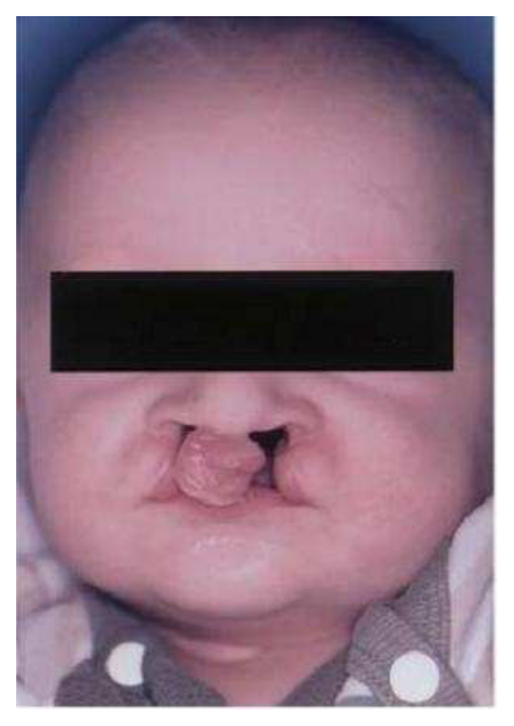
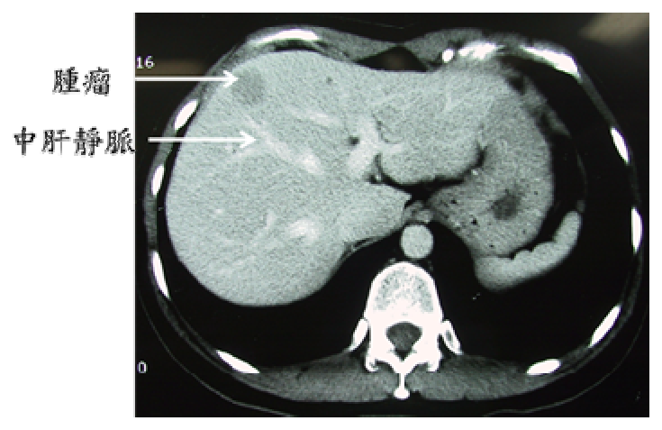
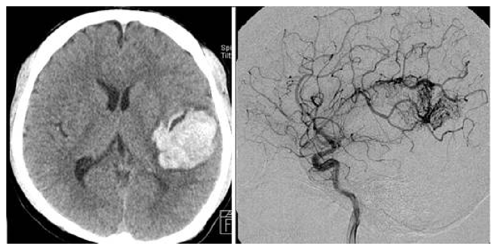
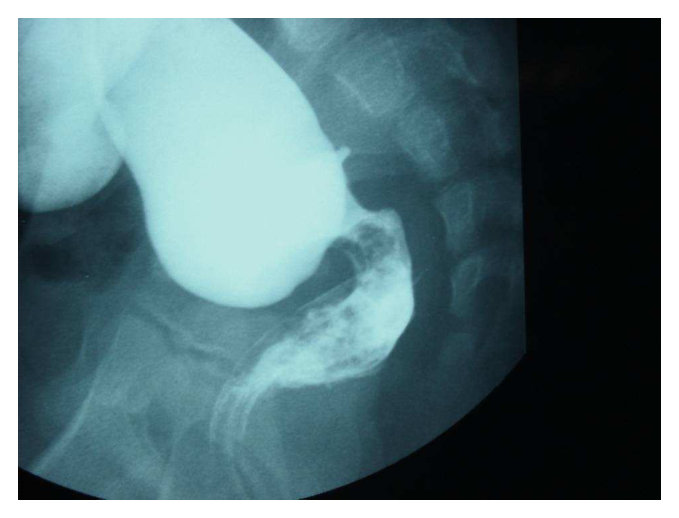
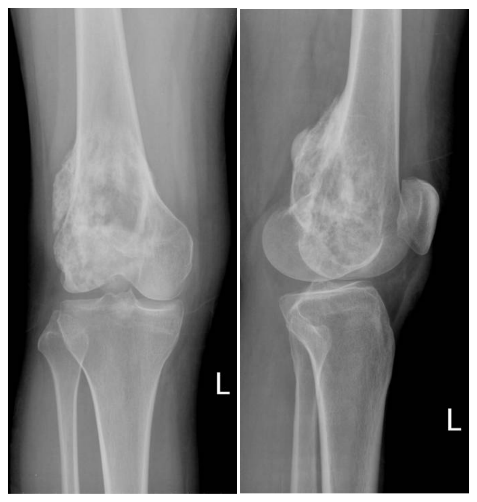
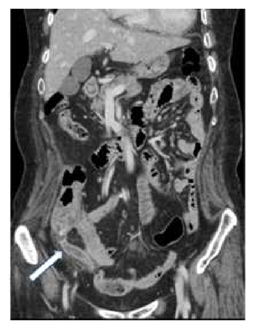
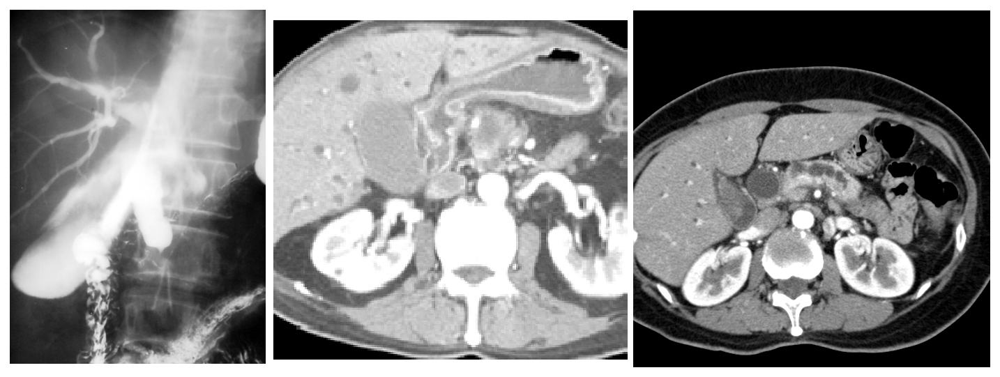
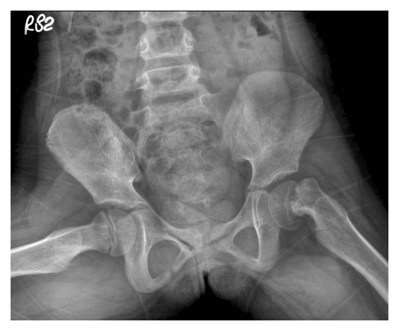

開卷有益 ／
醫師 ／ 醫學（五）（包括外科、骨科、泌尿科等科目及其相關臨床實例與醫學倫理） ／ 106 年第 2 次106 年第 2 次醫師醫學（五）（包括外科、骨科、泌尿科等科目及其相關臨床實例與醫學倫理）試題與答案
這一頁是民國 106 年第 2 次醫師醫學（五）（包括外科、骨科、泌尿科等科目及其相關臨床實例與醫學倫理）的整份歷屆試題，共 80 題，題目與標準答案出自考選部「國家考試試題及測驗式試題答案」開放資料，其中 80 題附有詳解。以下逐題列出題幹、選項與答案；要計時作答或記錄成績，請用線上練習。
考選部原始場次代碼：106080
線上作答這一科 →
全部 80 題
第 1 題
對於calcineurin inhibitors的敘述，下列何者正確？
（A） tacrolimus（FK-506）和sirolimus都屬於calcineurin inhibitors，都作用在FK binding protein之上（B） cyclosporine會有禿頭（alopecia）和牙齦增生（gingival hypertrophy）的副作用（C） FK-506所引起的糖尿病有時候會在停藥之後恢復（D） FK-506和cyclosporine都屬於腎臟移植術後用藥，不會有腎毒性的副作用答案：（C）
詳解與考點 正解：tacrolimus（FK-506）是 calcineurin inhibitor，可能造成胰島β細胞功能受損與糖尿病；停藥或改用其他免疫抑制劑後，部分患者的高血糖可改善，因此（C）正確，故選 C。
A：tacrolimus 與 FK binding protein 結合後抑制 calcineurin；sirolimus 雖也與 FK binding protein 結合，作用靶點是 mTOR，不是 calcineurin inhibitor，故錯。
B：cyclosporine 的典型副作用包括牙齦增生與多毛（hirsutism），禿頭較是 tacrolimus 可見的表現；選項將兩者混淆，故錯。
D：tacrolimus 與 cyclosporine 均可用於腎臟移植後免疫抑制，但兩者都有腎毒性（nephrotoxicity），不能稱不會造成腎毒性。
本題考點：鈣調神經磷酸酶抑制劑（calcineurin inhibitors）——tacrolimus 與 cyclosporine 可抑制 T 細胞活化且皆有腎毒性；sirolimus 是 mTOR inhibitor；tacrolimus 可引起糖尿病與禿頭，cyclosporine 可見牙齦增生與多毛。
第 2 題
外傷病人的眼睛受痛刺激時會睜開，對刺激無言語反應（no response），對痛的刺激只有退縮反應（withdrawal）。昏迷指數（Glasgow coma scale, GCS）為何？
（A） 8（B） 9（C） 10（D） 7答案：（D）
詳解與考點 正解：依 Glasgow coma scale（GCS）的睜眼、言語與運動三項反應分別計分。眼睛受痛刺激才睜開為 E2；對刺激無言語反應為 V1；對痛只有退縮反應為 M4。總分為 2+1+4=7 分，故選 D。
A：8 分高於本題的 7 分，可能是把退縮反應誤算為較高級的定位疼痛反應；但題幹明示只有 withdrawal，不能給 M5。
B：9 分無法由題幹三項反應相加得到，與無言語反應的 V1 尤不相符。
C：10 分同樣高估了病人的神經反應；GCS 各項須依實際最佳反應評分，不能因有睜眼或退縮便提高其他項分數。
本題考點：昏迷指數（Glasgow coma scale, GCS）由睜眼反應（eye opening）、言語反應（verbal response）與運動反應（motor response）相加；對痛退縮（withdrawal）是 M4，定位疼痛（localizing pain）才是 M5。
第 3 題
下列與大量輸血相關的敘述，何者錯誤？
（A） 大量輸血時，常規性給予碳酸氫鹽（bicarbonate）可以防止輸血後鹼中毒（alkalosis）（B） 檸檬酸鹽血液製品（citrated blood products）的大量輸血，會導致鈣離子濃度短暫下降（C） 大量輸血後會發生稀釋性血小板減少症（thrombocytopenia）（D） 使用非新鮮的血液製品大量輸血時，有可能發生高鉀血症（hyperkalemia）答案：（A）
詳解與考點 正解：「大量輸血」的代謝與凝血併發症。碳酸氫鹽並非大量輸血時的常規預防用藥；庫存血中的 citrate 經代謝反而可能產生鹼負荷，任意給予 bicarbonate 可能加重鹼血症，故（A）敘述錯誤、選 A。
B：citrated blood products 中的檸檬酸鹽會螯合游離鈣，大量快速輸入時可造成暫時性低血鈣；這是大量輸血須監測與視情況處理的典型問題，故非答案。
C：大量輸血以紅血球與液體置換全血成分，會稀釋血小板而引起稀釋性血小板減少症，敘述正確。
D：紅血球儲存期間鉀可自細胞外漏，使用較久的血品快速大量輸注時有高血鉀風險，敘述正確。
本題考點：大量輸血（massive transfusion）的常見併發症包括 citrate 引起的低血鈣（hypocalcemia）、血小板與凝血因子稀釋、儲存血相關高血鉀（hyperkalemia）；酸鹼與電解質處置應依實際檢驗值調整。
第 4 題
下列有關營養補充的敘述，何者錯誤？
（A） 腸胃道有功能時應儘可能使用腸道餵食（enteral feeding）（B） 從鼻胃管餵食時，為了防止餵食物反流和吸入，病人上半身應保持在90° 的坐姿（C） 最常做的鼻胃管灌食是在開始時以10至20 毫升／小時灌食，每4至6小時檢查胃殘留量，再決定是否增加灌食量（D） 使用胃造瘻或空腸造瘻灌食的病人，可能會有肉芽組織在造瘻處過度積聚的情形答案：（B）
詳解與考點 正解：鼻胃管灌食的吸入預防姿勢。腸道灌食時通常將床頭抬高約 30–45°，以降低胃內容物逆流與吸入風險；要求病人維持 90° 坐姿不是常規必要條件，也未必可行，故（B）錯誤、選 B。
A：腸胃道可用時，腸道餵食（enteral feeding）能維持腸黏膜與生理性營養途徑，通常優先於靜脈營養，敘述正確。
C：選項描述的是考題採用的低速率起始、依耐受度調整的漸進灌食作法；胃殘留量監測須依病況與機構流程判斷，不能視為所有病人的普遍常規，故非本題答案。
D：胃造瘻或空腸造瘻的出口處可能形成過度肉芽組織，屬可見的造口局部併發症，敘述正確。
本題考點：腸道營養（enteral nutrition）在腸胃道可用時優先；吸入預防（aspiration prevention）重點為床頭抬高與耐受度評估，而非一律維持 90° 坐姿；造口照護須留意肉芽組織（granulation tissue）與皮膚併發症。
第 5 題
Pilocytic astrocytoma屬於WHO classification system of glioma中的：
（A） Grade 1（B） Grade 2（C） Grade 3（D） Grade 4答案：（A）
詳解與考點 正解：pilocytic astrocytoma 的典型低惡性度生物學行為。此腫瘤多見於兒童與年輕人，通常界限較清楚、進展緩慢，傳統 WHO glioma 分級屬 Grade 1，故選 A。
B：Grade 2 為瀰漫性低級別膠質瘤常用的傳統分級，不是典型 pilocytic astrocytoma 的分級。
C：Grade 3 代表間變性（anaplastic）特徵較明顯的膠質瘤，與 pilocytic astrocytoma 的典型組織學與臨床行為不符。
D：Grade 4 為高度惡性膠質瘤的分級，例如 glioblastoma；不能因同屬 astrocytic tumor 就將 pilocytic astrocytoma 歸為 Grade 4。
本題考點：毛細胞型星狀細胞瘤（pilocytic astrocytoma）是傳統 WHO Grade 1 膠質瘤（glioma）；須與瀰漫性、高度惡性的星狀細胞腫瘤區分。
第 6 題
下列關於原發性腦瘤（primary brain tumor）的敘述，何者錯誤？
（A） glioma中，惡性度最高的是glioblastoma multiforme（GBM）（B） ependymoma好發於老年人（C） medulloblastoma是孩童primary brain tumor最常見的種類（D） medulloblastoma可能隨著CSF轉移至中樞神經系統的其他位置本題送分，無標準答案
詳解與考點 本題官方公告送分。
第 7 題
下列關於腰椎椎間盤突出（HIVD）的敘述，何者正確？
（A） 發生位置多在椎間盤的後外側（posterolateral）（B） 最常見的發生部位為腰椎第1-2節（L1-2）的椎間盤（C） 位於腰椎第4-5節（L4-5）發生的 HIVD 通常會壓迫L4的神經根（nerve root）（D） 所有的HIVD都一定需要手術處理答案：（A）
詳解與考點 正解：腰椎椎間盤突出常由纖維環後外側的相對薄弱處突出。後外側（posterolateral）突出最常見，並容易壓迫向下行走的神經根，故（A）正確、選 A。
B：腰椎椎間盤突出最常見於活動度與負荷較大的下腰椎，尤其 L4-5 或 L5-S1，不是 L1-2。
C：L4-5 椎間盤的典型後外側突出多壓迫下行的 L5 神經根，而非離開該椎間孔的 L4 神經根；這個選項看似依節段名稱直覺配對，卻忽略了神經根在椎管內的走行。
D：多數 HIVD 可先採保守治療；僅在進行性神經缺損、馬尾症候群或症狀持續且嚴重等情況考慮手術，並非全部都必須手術。
本題考點：腰椎椎間盤突出（herniated intervertebral disc, HIVD）常見於後外側（posterolateral）；L4-5 突出通常影響 L5 神經根；手術適應症取決於神經學缺損與症狀嚴重度。
第 8 題
下列有關脊髓空洞症（syringomyelia）的敘述，何者錯誤？
（A） 症狀類似中央脊髓症候群（central cord syndrome）（B） 感覺喪失以本體感覺（proprioceptive）為主，痛及觸覺正常（C） 上肢較下肢無力（D） 核磁共振掃描（MRI）是檢查選擇之一答案：（B）
詳解與考點 正解：脊髓空洞症中央病灶先傷及前白連合處交叉的痛溫覺纖維。其典型感覺缺損是雙側、節段性的痛覺與溫度覺下降，而本體感覺常相對保留，所以（B）把感覺型態完全顛倒，為錯誤敘述、選 B。
A：空洞自脊髓中央擴大時可波及中央區結構，臨床表現可與中央脊髓症候群有相似處，故非答案。
C：中央病灶若影響頸髓前角或長傳導徑，可使上肢無力較下肢明顯，與常見表現相符。
D：MRI 能顯示脊髓內空洞及相關構造異常，是重要的檢查選擇，敘述正確。
本題考點：脊髓空洞症（syringomyelia）優先損及交叉中的脊髓丘腦徑（spinothalamic tract），造成痛溫覺分離（dissociated sensory loss）；後柱功能如本體感覺（proprioception）通常較保留；MRI 用於確診與找病因。
第 9 題
最常見的單一顱骨縫合過早（single-suture craniosynostosis）是何種？
（A） 冠狀縫（coronal）（B） 人字縫（lambdoid）（C） 矢狀縫（sagittal）（D） 蝶顳縫（sphenozygomatic）答案：（C）
詳解與考點 正解：單一顱骨縫合過早閉合中最常見的型態。矢狀縫（sagittal suture）早閉最常見，造成頭顱前後徑延長、橫徑變窄的舟狀頭（scaphocephaly），故選 C。
A：冠狀縫早閉可造成前額與眼眶的不對稱或短頭外觀，但發生率低於矢狀縫早閉。
B：人字縫早閉相對少見；後頭部扁平更常須與姿勢性頭形異常鑑別，不能把常見的後頭扁平都視為人字縫早閉。
D：蝶顳縫不是單一顱縫早閉分類中最常見的答案，與本題流行病學事實不符。
本題考點：顱縫早閉（craniosynostosis）是顱縫過早融合；矢狀縫早閉（sagittal synostosis）最常見，典型頭形為舟狀頭（scaphocephaly）。
第 10 題
關於下圖類型的病人，下列敘述那些是正確的？①約5000個活嬰可能會出現一個 ②可能有14%的病人伴隨其他先天性的畸型 ③病人後續的照顧需要多科專業的合作，包含整形外科、耳鼻喉科、小兒科、牙科、口腔外科、語言師、營養師、精神科醫師、社工等 ④通常建議嘴唇在3個月修復，上顎於12個月修復 ⑤若伴隨小耳症或耳朵缺失建議在7歲左右開始重建

（A） ①②③④（B） ②③④⑤（C） ①③⑤（D） ①④⑤本題送分，無標準答案
詳解與考點 本題官方公告送分。
第 11 題
軸式皮瓣（axial pattern flap）的血液循環來自：
（A） 皮動脈及靜脈（cutaneous artery and vein）（B） 只靠組織液之滲透供應其所需之營養（C） 靠肌肉之血管（myocutaneous perforators）（D） 只靠真皮之微血管（subdermal plexus）本題送分，無標準答案
詳解與考點 本題經考選部公告一律給分。軸式皮瓣（axial pattern flap）血液供應來自特定命名之皮動靜脈，此為整形外科公認定義，(A)理應為明確答案；惟部分教材亦強調肌皮穿支（myocutaneous perforators）在特定軸式皮瓣（如TRAM瓣）血供中同樣扮演關鍵角色，致(A)(C)何者為「軸式皮瓣」定義性血供來源出現分類上的模糊地帶。(B)(D)僅靠組織液滲透或真皮微血管供應係隨意皮瓣（random pattern flap）特徵，可排除。作答以現行整形外科皮瓣分類教材為準。
第 12 題
關於臉部縫合技巧與如何減少疤痕增生之敘述，下列何者錯誤？
（A） 臉部皮膚之切口（incision）須經詳細計畫與設計，不可任意切割傷口（B） 臉部皮膚之切口須與皮膚鬆弛線（relax skin tension line）儘量平行（C） 臉部皮膚之切口須儘量與皺紋方向垂直切開（D） 臉部傷口之縫合需消除皮下死腔（dead space），使用較細之縫線縫合傷口答案：（C）
詳解與考點 正解：臉部切口須順應皮膚張力與皺紋方向，以減少張力造成的疤痕明顯化。切口應盡量平行於皮膚鬆弛線及自然皺紋，而非垂直切開，因此（C）錯誤、選 C。
A：臉部切口位置會影響外觀與疤痕，術前仔細規畫、避免任意切割傷口是正確原則。
B：切口與皮膚鬆弛線（relaxed skin tension line）平行時，癒合張力較小且較易隱藏於自然紋路，敘述正確。
D：消除皮下死腔可減少血腫、漿液腫與傷口張力；在適當情況使用較細縫線也有助於細緻的臉部傷口處理，故非答案。
本題考點：臉部傷口處理（facial wound closure）重視切口設計與皮膚鬆弛線（relaxed skin tension line）；分層縫合（layered closure）與消除死腔（dead space）可降低傷口併發症與疤痕張力。
第 13 題
下列有關靜脈竇型（sinus venosus）心房中隔缺損（atrial septal defect，ASD）之敍述，何者錯誤？
（A） 常合併肺靜脈回流異常（B） 缺損的位置，有時是在心房中隔底部接近下腔靜脈開口（C） 手術修補時，一般需使用布塊（patch）修補（D） 可以使用導管手術來關閉缺損答案：（D）
詳解與考點 正解：依本題傳統判準，靜脈竇型 ASD 的缺損位置與常見合併異常，使一般 ASD occluder 通常不適用，多需外科以 patch 修補並處理異常肺靜脈回流；故（D）稱可用導管手術關閉為錯誤、選 D。惟特定上腔靜脈型病例在專門中心可評估以 covered stent 經導管治療，不能將此舊題判準延伸為所有病例皆不可行。
A：上腔靜脈型靜脈竇 ASD 常合併部分肺靜脈回流異常，敘述正確。
B：靜脈竇型缺損可位於接近上腔靜脈或下腔靜脈開口的心房中隔區域；接近下腔靜脈開口的低位型仍屬此類，故非答案。
C：因缺損常缺乏可供一般封堵器固定的邊緣，且可能合併肺靜脈異常回流，外科 patch 修補是傳統典型處置，敘述正確。
本題考點：靜脈竇型心房中隔缺損（sinus venosus atrial septal defect, ASD）常合併部分肺靜脈回流異常（partial anomalous pulmonary venous return）；傳統上多採外科 patch repair，特定上腔靜脈型病例則可能評估 covered-stent 治療。
第 14 題
下列關於心臟瓣膜置換手術中，置換瓣膜（prosthetic valve）的選擇，何者正確？①計畫生育之年輕女性患者可選擇機械型瓣膜（mechanical prosthesis） ②年齡大於70歲患者可選擇生物組織型瓣膜（bioprosthesis）③血友病患者可選擇機械型瓣膜 ④尿毒症患者且須長期血液透析，可選擇組織型瓣膜
（A） ①②③（B） 僅①③（C） ②④（D） 僅④答案：（C）
詳解與考點 正解：人工瓣膜選擇須平衡耐久性與長期抗凝造成的風險。年齡大於 70 歲者可選生物組織瓣膜；尿毒症且需長期血液透析者也可選組織型瓣膜，故正確組合為②④，選 C。
A：此組合含①與③。計畫生育的年輕女性若用機械瓣膜，長期抗凝會使妊娠管理複雜並增加母胎風險；血友病患者則因出血傾向不適合需要長期抗凝的機械瓣膜，故此組合錯誤。
B：僅①③同樣把兩個不適合機械瓣膜的情境列為正確，無法成立。
D：僅④漏掉②。高齡病人的預期壽命與機械瓣膜抗凝風險考量，使生物組織瓣膜是合理選擇，故不能只選④。
本題考點：人工心臟瓣膜（prosthetic valve）選擇取決於瓣膜耐久性、出血風險與抗凝需求；機械瓣膜（mechanical prosthesis）通常需長期抗凝；生物組織瓣膜（bioprosthesis）常適用於高齡或不宜長期抗凝者。
第 15 題
肺動脈瓣閉鎖合併心室中隔缺損（pulmonary atresia with ventricular septal defect）的病人，在接受初步手術時，所謂的單一化（unifocalization）是要將下列那些血管聚集在一起以準備第二階段手術之用？ ①自體的肺動脈（native pulmonary artery） ②主要的主動脈至肺動脈側枝循環（major aortopulmonary collateralarteries） ③自體的肺靜脈（native pulmonary vein） ④左冠狀動脈主支（left main coronary artery）
（A） ①②（B） ①③（C） ②③（D） ①④答案：（A）
詳解與考點 正解：pulmonary atresia with ventricular septal defect 的 unifocalization，要把供應肺循環的不同動脈來源重建為可用的肺動脈床。手術聚集自體肺動脈（①）與主要主動脈至肺動脈側枝循環（②），以利後續建立右心室至肺動脈連接，故選 A。
B：自體肺靜脈（③）負責將氧合血回流左心房，並不是要被納入肺動脈重建的供血來源，因此①③錯誤。
C：②雖正確，但③不是 unifocalization 的重建對象，故②③錯誤。
D：左冠狀動脈主支（④）供應心肌，絕不可作為肺動脈側枝聚集的對象；①④錯誤。
本題考點：肺動脈瓣閉鎖合併心室中隔缺損（pulmonary atresia with ventricular septal defect, PA/VSD）可有主要主動脈肺側枝（major aortopulmonary collateral arteries, MAPCAs）；單一化（unifocalization）將原生肺動脈與 MAPCAs 重建為肺循環血管床。
第 16 題
下列有關冠狀動脈疾病病人之處置，何者錯誤？
（A） 三條冠狀動脈疾病之糖尿病病人接受冠狀動脈繞道手術，比接受支架置放術具有較好的長期存活（B） 多條血管冠狀動脈疾病病人的治療方面，經皮冠狀動脈處置（percutaneous coronary intervention）與冠狀動脈繞道手術皆比藥物治療有顯著的生存利益（C） 高嚴重性冠狀動脈疾病病人若以經皮冠狀動脈處置治療，其再處置率較接受冠狀動脈繞道手術者為高（D） 具有高風險的特徵（例如：糖尿病、左心室功能異常、腎功能異常、年老、慢性肺病、周邊動脈疾病）的多條血管冠狀動脈疾病病人接受冠狀動脈繞道手術比接受經皮冠狀動脈處置具有較差的長期存活率答案：（D）
詳解與考點 正解：官方答案為 D。惟（B）將 PCI 與 CABG 對所有多條血管冠狀動脈疾病病人均有顯著生存利益說得過度概括；在部分穩定、多條血管疾病且無左主幹病變、左心室功能保留的病人，未證實血運重建必然優於最佳藥物治療。就本題傳統比較，糖尿病、左心室功能異常等高風險特徵下，CABG 通常不會比 PCI 有較差的長期存活，故（D）把結果方向說反。
A：三條血管疾病合併糖尿病者，CABG 的長期結果常優於支架置放，敘述正確。
B：PCI 與 CABG 是否較藥物治療帶來生存利益，須依左主幹病變、左心室功能、缺血負荷與冠狀動脈解剖等條件判斷；此無條件敘述有爭議，不能據此推成一律正確。
C：高複雜度冠狀動脈疾病用 PCI 後，重複血運重建的機率通常高於 CABG；這不代表 PCI 的長期再處置率較低。
本題考點：多條血管冠狀動脈疾病（multivessel coronary artery disease）的血運重建須比較 PCI 與冠狀動脈繞道手術（coronary artery bypass grafting, CABG）；治療選擇須整合病灶複雜度、左主幹病變、左心室功能、糖尿病與病人風險。
第 17 題
下列有關胸腺瘤（thymoma）之Masaoka staging之敘述，何者錯誤？
（A） Stage IVa：胸腔外轉移（B） Stage I：腫瘤之capsule完整，無capsule invasion（C） Stage II為capsule invasion（D） Masaoka Stage III為macroscopic invasion至周圍的器官，如心包膜、大血管或肺答案：（A）
詳解與考點 正解：Masaoka staging 對胸腺瘤擴散範圍的定義。Stage IVa 是胸膜或心包膜播散，胸腔外的血行或淋巴轉移應為 Stage IVb；因此（A）錯誤、選 A。
B：Stage I 指腫瘤被完整包膜包覆，沒有包膜侵犯，敘述正確。
C：Stage II 表示有顯微或肉眼可見的局部包膜侵犯，屬局部延伸，敘述正確。
D：Stage III 為肉眼侵犯鄰近器官，例如心包膜、大血管或肺，與分期定義相符。
本題考點：Masaoka 分期（Masaoka staging）用於胸腺瘤（thymoma）；Stage I 為完整包膜，Stage II 有包膜侵犯，Stage III 侵犯鄰近器官，Stage IVa 為胸膜或心包膜播散，Stage IVb 為遠端轉移。
第 18 題
氣管分岔處（carina）在胸部 X 光所在的高度約相應於脊椎那一個部位？
（A） C6（B） T1-2（C） T4-5（D） L2-3答案：（C）
詳解與考點 正解：胸部 X 光常用的縱隔解剖定位。氣管分岔處（carina）約位於胸骨角平面，對應 T4-5 椎體高度，故選 C。
A：C6 位於頸椎高度，接近環狀軟骨等上呼吸道定位，遠高於胸腔內的 carina。
B：T1-2 仍位於胸廓入口附近，高於氣管分岔的典型位置。
D：L2-3 已在腰椎高度，遠低於縱隔中的氣管分岔處。
本題考點：氣管分岔處（carina）是胸部影像與支氣管鏡的重要定位點；其表面解剖約在胸骨角（sternal angle）平面，脊椎高度約為 T4-5。
第 19 題
有關肺癌的描述，下列何者正確？①adenocarcinoma是最常見的細胞型 ②squamous cell carcinoma 的發生與抽菸最有關聯 ③squamous cell carcinoma常位於靠近肺門中央的位置 ④小細胞肺癌常可以經由手術切除得到治療
（A） ①③④（B） ①②③（C） ①②④（D） ②③④答案：（B）
詳解與考點 正解：四項肺癌流行病學與治療敘述中，只有①②③同時正確。adenocarcinoma 是最常見的肺癌細胞型；squamous cell carcinoma 與吸菸關聯強且常在近肺門的中央位置；小細胞肺癌通常不是以手術為主要治療，故選 B。
A：此組合含④。小細胞肺癌（small cell lung cancer）常在診斷時已有廣泛或微小轉移，主要治療為全身性治療合併視情況放射治療，不是常可單靠手術治癒，故此組合錯誤。
C：①②正確，但④錯誤，故組合不能成立。
D：②③正確，但漏掉正確的①且納入錯誤的④，故錯誤。
本題考點：肺癌（lung cancer）中腺癌（adenocarcinoma）最常見；鱗狀細胞癌（squamous cell carcinoma）與吸菸密切且常偏中央；小細胞肺癌（small cell lung cancer）多以系統性治療為主。
第 20 題
對於胃食道逆流疾病（gastroesophageal reflux disease）的外科手術適應症，何者錯誤？
（A） 以proton pump inhibitor（PPI）治療無效的病人（B） 預期proton pump inhibitor（PPI）治療會超過 5 年的病人（C） 病人合併有嚴重ulcer（D） 病人有Barrett's mucosa答案：（B）
詳解與考點 正解：官方答案為 B。惟胃食道逆流疾病手術不能只以預計服用 PPI 的年數決定；（B）所述本身不是獨立適應症，故依本題判準為錯誤。另（C）、（D）是否支持手術亦須有客觀逆流證據與個別病況，題目採用的是條件不完整的舊式命題框架。
A：經適當評估後，PPI 治療仍無效的病人可考慮手術處理，尤其須先排除非逆流造成的症狀。
C：嚴重 ulcer 並非無條件的抗逆流手術適應症，須釐清其是否與逆流相關及是否有其他處置需求；因此此選項的敘述亦不夠嚴謹。
D：Barrett's mucosa 需納入治療與追蹤評估，但不能單獨為抗腫瘤目的而作為抗逆流手術適應症；此選項同樣須附條件解讀。
本題考點：胃食道逆流疾病（gastroesophageal reflux disease, GERD）的抗逆流手術（antireflux surgery）須建立客觀診斷並評估藥物治療效果、併發症與病人需求；單以 PPI 使用年數、ulcer 或 Barrett's mucosa 均不能無條件決定手術。
第 21 題
關於胸腺瘤的敘述，下列何者錯誤？
（A） 前上縱隔腔最常見的縱隔腔腫瘤（B） 第二期的胸腺瘤開刀切除後，常須加上放射治療（C） cisplatin 的化療效果對其治療效果不佳（D） 大部分重肌無力症（myasthenia gravis）無合併胸腺瘤答案：（C）
詳解與考點 正解：官方答案為 C。胸腺瘤對含 cisplatin 的複合化學治療可有反應，故（C）稱其化療效果不佳為錯誤。惟（B）所稱第二期胸腺瘤切除後「常須」放射治療也不夠精確；R0 切除後的術後放射治療具爭議，須依侵犯程度、切除邊緣等風險分層。
A：胸腺瘤是成人前上縱隔最常見的原發性腫瘤之一，敘述正確。
B：第二期胸腺瘤完整切除後是否加做放射治療須依侵犯程度與切除邊緣等風險分層，並非一律需要；此選項措辭有爭議。
D：雖然胸腺瘤可合併重症肌無力（myasthenia gravis），但大多數重症肌無力病人沒有胸腺瘤，敘述正確。
本題考點：胸腺瘤（thymoma）多位於前上縱隔（anterior superior mediastinum）；可合併重症肌無力（myasthenia gravis）；晚期或不可切除疾病可使用以 cisplatin 為基礎的複合化學治療（combination chemotherapy）。
第 22 題
一位63歲男性到門診主訴發現皮膚泛黃已三週，尿液呈深褐色，最近有灰白色大便，無腹部疼痛及不適，食慾稍差。下列何種檢查能快速做鑑別診斷？
（A） 抽血驗B型、C型肝炎（B） 測血中總膽紅素/直接型膽紅素指數（C） 腹部超音波檢查（D） 腹部電腦斷層檢查答案：（C）
詳解與考點 正解：無痛性黃疸合併深褐尿與灰白便，提示結合型高膽紅素血症及膽道阻塞。腹部超音波可快速判斷膽管是否擴張、是否有膽結石及肝膽胰區的結構異常，是此情境快速鑑別阻塞性黃疸的首選初步影像檢查，故選 C。
A：B、C 型肝炎檢驗可評估肝炎病因，但無法快速判斷是否有膽管擴張或機械性阻塞，不能作為此題首選鑑別檢查。
B：總膽紅素與直接型膽紅素可支持結合型黃疸，卻不能指出阻塞位置或區分結石、腫瘤等結構性原因；它看似最快，卻缺少本題所需的解剖鑑別能力。
D：腹部電腦斷層可進一步評估病灶範圍與腫瘤，但相較超音波並非這個阻塞性黃疸情境的快速第一線檢查。
本題考點：阻塞性黃疸（obstructive jaundice）常出現深色尿、灰白便與直接型高膽紅素血症；腹部超音波（abdominal ultrasonography）是初步評估膽道擴張與膽結石的快速影像工具；電腦斷層（computed tomography, CT）用於後續病因與範圍評估。
第 23 題
下圖是一位肝癌病人的電腦斷層攝影，根據Couinaud等所提出，依照門脈分枝的肝臟解剖學分葉，則腫瘤位於肝臟的那一個小葉？

（A） 第Ⅱ分葉（B） 第Ⅳ分葉（C） 第Ⅵ分葉（D） 第Ⅷ分葉答案：（B）
詳解與考點 正解：官方答案為 B，即第Ⅳ分葉。惟依圖中腫瘤箭頭所指位置與中央肝靜脈的相對關係判讀，病灶似位於影像左側、亦即病人右肝的前上區；若中央肝靜脈確為分界，該位置較接近第Ⅷ分葉而非第Ⅳ分葉。圖中未見足以完全確認門脈平面與肝靜脈分界的連續切面，因此此題官方答案與單張影像定位間存在爭點。
A：第Ⅱ分葉位於左肝外側區的上方，通常在左肝靜脈外側；圖示病灶不在左肝外側區，故不符。
C：第Ⅵ分葉位於右肝後下區，須在門脈平面下方且偏後；圖示病灶位於較上方的肝實質，與第Ⅵ分葉位置不符。
D：第Ⅷ分葉位於右肝前上區。由單張軸向影像看，病灶相對中央肝靜脈的位置其實看似較接近此區，這也是與官方答案 B 產生判讀爭點的原因。
本題考點：Couinaud 肝臟分段（Couinaud liver segmentation）以門靜脈分支為核心、肝靜脈作為分段間界線；中肝靜脈（middle hepatic vein）大致分隔右肝前區與左肝內側區；第Ⅳ分葉屬左肝內側區，第Ⅷ分葉屬右肝前上區。
第 24 題
下列有關疝氣（hernia）的敘述，何者錯誤？
（A） 75%的疝氣發生在腹股溝區域（inguinal region）（B） 以腹股溝疝氣（inguinal hernia）而言，三分之二屬於間接型疝氣（indirect hernia）（C） 以腹股溝疝氣發生率而言，女性多於男性（D） 以股疝氣（femoral hernia）發生率而言，女性多於男性答案：（C）
詳解與考點 正解：腹股溝疝氣的性別分布。腹股溝疝氣在男性遠比女性常見，故稱女性發生率較男性高的（C）錯誤，應選 C。
A：腹股溝區是腹壁疝氣最常見的發生位置，約占所有疝氣的大多數，75% 是用來表達其高度集中於此區的概略比例，敘述正確，故非答案。
B：腹股溝疝氣中，間接型疝氣（indirect inguinal hernia）經由內腹股溝環進入腹股溝管，為較常見型態；約三分之二屬間接型的敘述正確。
D：股疝氣（femoral hernia）雖整體較少見，卻因女性骨盆構造而在女性較常見，敘述正確，故非答案。
本題考點：腹股溝疝氣（inguinal hernia）在男性較常見，且以間接型為主；股疝氣（femoral hernia）則相對偏向女性。
第 25 題
下列有關急性腹症（acute abdomen）之敘述，何者錯誤？
（A） 身體檢查發現肚臍周圍瘀青（periumbilical bruising）稱為Courvoisier’s sign（B） 急性膽囊炎（acute cholecystitis）之轉移痛 (referred pain）會轉移至右胸（C） 消化性潰瘍穿孔（perforated peptic ulcer）之轉移痛 (referred pain）會轉移至右側腰部（D） mesenteric thrombosis or embolism引起之急性腹症需立刻施行手術答案：（A）
詳解與考點 正解：官方答案為 A。肚臍周圍瘀青的徵象名稱為 Cullen sign，不是 Courvoisier’s sign；Courvoisier’s sign 是無痛性黃疸合併可觸及、無壓痛膽囊，故（A）明確錯誤。惟（C）的右側腰部不是消化性潰瘍穿孔轉移痛的典型定論，（D）也非所有腸繫膜血栓或栓塞均須立即手術，題目有複數可疑敘述。
B：急性膽囊炎的疼痛可由膈神經相關路徑轉移至右肩、右肩胛或右上胸部，右胸的描述符合此種轉移痛。
C：消化性潰瘍自由穿孔多為突發上腹痛擴散全腹，可在右下腹明顯或轉移至肩部；右側腰部並非典型定論，因此此敘述也有疑義。
D：腸繫膜血栓或栓塞須儘速評估再灌流與腸缺血程度；腹膜炎或腸壞死時須緊急手術，但不能由選項原文推成所有病例一律立即手術。
本題考點：Cullen sign 是肚臍周圍瘀青，提示腹腔內出血；Courvoisier’s sign 是無痛性黃疸時可觸及膽囊；急性腸繫膜缺血的處置依腸道存活性、腹膜炎與再灌流可行性決定。
第 26 題
影響胃排空（gastric empty）速率的因素，下列何者錯誤？
（A） 熱量含量（B） 營養成分（C） 鹽分含量（D） 食物固態或液態答案：（C）
詳解與考點 正解：胃排空受哪些餐食特性調控。胃排空會依食物熱量密度、營養素組成及固體或液體型態而改變；單以鹽分含量並非這類經典的主要決定因子，故錯誤的是 C。
A：進入十二指腸的熱量負荷會啟動回饋機制，熱量密度較高的餐食通常排空較慢，故熱量含量是重要因素。
B：脂肪、蛋白質與醣類對胃排空的影響不同，其中脂肪常使排空延緩；營養成分確會影響排空速率。
D：液體通常較固體快離開胃；固體須先經胃的研磨與篩選，因此食物的固、液態會影響胃排空。
本題考點：胃排空（gastric emptying）受熱量密度、營養成分與食物物理型態調節；十二指腸回饋（duodenal feedback）可抑制過快排空。
第 27 題
關於嚴重 diabetic gastroparesis 的手術治療方式，下列何者最不適當？
（A） 胃切除（B） 胃造口（C） 空腸造口（D） 胰臟移植答案：（A）
詳解與考點 正解：官方答案為 A。胃切除會造成重大解剖改變與營養後果，對糖尿病胃輕癱不是一般優先治療，故在本題選項中最不適當。惟部分或次全胃切除曾用於極少數難治病例的救援處置，不能解讀為從未使用。
B：胃造口（gastrostomy）可作為胃減壓途徑，在嚴重胃滯留、反覆嘔吐時可緩解症狀。
C：空腸造口（jejunostomy）可繞過胃提供腸道營養，特別適合口服無法維持營養的嚴重胃輕癱患者。
D：胰臟移植（pancreas transplantation）僅限原本即符合糖尿病整體移植資格的特定患者，不能因胃輕癱單獨作為標準手術；此選項亦有嚴格條件。
本題考點：糖尿病胃輕癱（diabetic gastroparesis）的重點是血糖控制、症狀緩解與營養支持；胃減壓（gastric decompression）及空腸灌食（jejunal feeding）可用於難治性重症，手術須審慎個別化。
第 28 題
下列有關胃腸間質瘤（gastrointestinal stromal tumors，GIST）之敘述，何者正確？
（A） 發生部位以大腸的比率最高，迴腸其次，胃最少見（B） 約80%的胃腸間質瘤會表現k-ras抗原（C） 約40%的胃腸間質瘤在診斷時已經有淋巴腺轉移（D） 對於轉移或無法手術切除的胃腸間質瘤，使用imatinib mesylate標靶治療的效果良好答案：（D）
詳解與考點 正解：無法切除或轉移性 GIST 的系統治療。GIST 常由 KIT 或 PDGFRA 訊號異常驅動，imatinib mesylate 可抑制相關酪胺酸激酶，對適合的轉移或無法切除病灶有良好療效，故選 D。
A：GIST 最常發生於胃，其次為小腸，並非以大腸最多、胃最少；此選項把常見部位順序顛倒。
B：GIST 的代表性分子標記是 KIT（CD117）或 DOG1，並非約80% 表現 k-ras 抗原；看似在考腫瘤基因，卻把不同腫瘤的分子異常混在一起。
C：GIST 主要經血行或腹膜播散，淋巴結轉移罕見，並非約40% 初診即有淋巴腺轉移。
本題考點：胃腸間質瘤（gastrointestinal stromal tumor, GIST）常源於胃與小腸；KIT/PDGFRA 酪胺酸激酶（tyrosine kinase）是 imatinib 治療的重要標的。
第 29 題
一名84歲男性，因四天未解便，出現腹脹、陣發性腹痛等症狀而被送到急診。病患先前有慢性便秘病史，沒有接受過腹部手術，腹部X光檢查可看到明顯脹大之乙狀結腸，有bent inner tube sign。生命徵象穩定，理學檢查腹部有輕微壓痛，但無腹膜炎症狀，無腹股溝疝氣，下列初步處置何者最理想？
（A） 立即剖腹探查（B） 胃鏡檢查（C） 乙狀結腸鏡檢查並減壓（D） 腹部超音波檢查答案：（C）
詳解與考點 正解：高齡、慢性便秘、乙狀結腸明顯擴張與 bent inner tube sign 指向乙狀結腸扭轉（sigmoid volvulus）。患者生命徵象穩定且無腹膜炎，初步應以乙狀結腸鏡減壓及復位，故選 C。
A：剖腹探查適用於腸壞死、穿孔、腹膜炎或內視鏡減壓失敗；本例尚無這些警訊，立即手術並非最理想初步處置。
B：胃鏡只能檢視上消化道，無法解除乙狀結腸扭轉造成的遠端大腸阻塞，故不適當。
D：腹部超音波對已由腹部 X 光呈現典型扭轉徵象的患者，不能同時診斷性復位與減壓，無法取代內視鏡初步處置。
本題考點：乙狀結腸扭轉（sigmoid volvulus）常見於高齡與慢性便秘；無腹膜炎或缺血時先行內視鏡減壓（endoscopic decompression），有缺血或穿孔則手術。
第 30 題
52歲女性病人診斷有甲狀腺乳突癌（papillary carcinoma），術前臨床分期為T3N1aMx，下列何種術式為最佳選擇？
（A） 甲狀腺全切除術（B） 甲狀腺全切除術及頸部第六區淋巴廓清術（C） 甲狀腺全切除術及頸部第四、五、六區淋巴廓清術（D） 甲狀腺全切除術及頸部第二、三、四、五、六區淋巴廓清術答案：（B）
詳解與考點 正解：T3N1a 的乳突癌已有中央頸部淋巴結轉移。甲狀腺全切除可處理原發腫瘤，而 N1a 指中央區（第六區）淋巴結受累，故應合併第六區淋巴廓清術，選 B。
A：僅做甲狀腺全切除未處理已臨床分期為 N1a 的中央區淋巴結病灶，處置不足。
C：第六區以外的第四、五區屬側頸部範圍；未提供側頸淋巴結轉移證據時，將其納入常規廓清屬過度擴大手術。
D：第二至五區同為側頸部區域。本題只有 N1a，不能由中央區陽性直接推論需清除所有側頸區；它看似徹底，卻不符合以病灶分區決定廓清範圍的原則。
本題考點：甲狀腺乳突癌（papillary thyroid carcinoma）的 N1a 為中央頸部淋巴結轉移；中央頸部淋巴結廓清（central neck dissection）對應第六區。
第 31 題
下列何者不是因胚胎發育異常造成的甲狀腺組織位置變異？
（A） 舌後甲狀腺（lingual thyroid）（B） 異位性甲狀腺（ectopic thyroid）（C） 迷路甲狀腺（lateral aberrant thyroid）（D） 甲狀腺舌骨囊腫（thyroglossal duct cyst）答案：（C）
詳解與考點 正解：哪些病灶可由甲狀腺胚胎下降或甲狀腺舌管殘留解釋。迷路甲狀腺（lateral aberrant thyroid）這個舊稱在臨床上常代表側頸淋巴結內的轉移性甲狀腺癌，而非正常胚胎發育造成的位置變異，故選 C。
A：舌後甲狀腺（lingual thyroid）是甲狀腺未完成自舌盲孔向下移行所致的異位甲狀腺，屬胚胎發育異常。
B：異位性甲狀腺（ectopic thyroid）本身即指甲狀腺組織在正常下降路徑或其他位置的發育位置異常。
D：甲狀腺舌骨囊腫（thyroglossal duct cyst）源於甲狀腺舌管殘留，屬甲狀腺胚胎發育相關的先天性病灶。
本題考點：甲狀腺下降（thyroid descent）由舌盲孔至頸部；甲狀腺舌管殘留（thyroglossal duct remnant）可形成甲狀腺舌骨囊腫，側頸甲狀腺組織須警覺轉移。
第 32 題
下列有關甲狀腺舌管囊腫（thyroglossal duct cyst）之敘述，何者錯誤？
（A） 生長在頸部中央（B） 不會發生乳突癌（C） 有時會有細菌感染（D） 手術時要將舌骨中央切除答案：（B）
詳解與考點 正解：甲狀腺舌管囊腫並非絕不惡性化。雖然罕見，甲狀腺舌管囊腫可發生癌症，最常見為乳突癌（papillary carcinoma），故（B）「不會發生乳突癌」錯誤，選 B。
A：甲狀腺舌管囊腫通常位於頸部正中線，且可隨吞嚥或伸舌動作移動，敘述正確。
C：囊腫可因上呼吸道或局部感染而出現疼痛、紅腫或膿瘍，故有時會有細菌感染正確。
D：標準 Sistrunk 手術會切除囊腫、管道及舌骨中央部分，以降低殘留管道造成的復發，敘述正確。
本題考點：甲狀腺舌管囊腫（thyroglossal duct cyst）多位於頸部正中；Sistrunk procedure 包含舌骨中央切除；罕見但可合併乳突癌（papillary carcinoma）。
第 33 題
下列有關乳房 MRI 檢查之敘述，何者錯誤？
（A） 對於ductal carcinoma in situ（DCIS）之敏感度 ( sensitivity ) 可達 90%（B） 特異性 ( specificity) 屬中等 ( moderate ) 而已（C） 對於occult breast cancer之病人為相當有用的檢查（D） 對於高風險 ( high risk ) 病人可作為篩檢 ( screening ) 檢查本題送分，無標準答案
詳解與考點 本題官方公告送分。
第 34 題
乳癌病患接受改良式根治性乳房切除術（modified radical mastectomy）後，發生肩胛畸形（winged scapuladeformity），表示下列何神經受損？
（A） 胸背神經（thoracodorsal nerve）（B） 長胸神經（long thoracic nerve）（C） 內胸神經（medial pectoral nerve）（D） 肋間臂神經（intercostal brachial nerve）答案：（B）
詳解與考點 正解：翼狀肩胛。長胸神經（long thoracic nerve）支配前鋸肌（serratus anterior）；神經受損使前鋸肌無法將肩胛骨固定於胸壁，推牆時肩胛內側緣突出，形成翼狀肩胛，故選 B。
A：胸背神經（thoracodorsal nerve）支配背闊肌，受損主要影響肩關節內收、伸展與內旋，不是典型翼狀肩胛。
C：內胸神經（medial pectoral nerve）支配胸小肌及部分胸大肌，受損影響胸肌功能，但不會造成前鋸肌麻痺所致的翼狀肩胛。
D：肋間臂神經（intercostal brachial nerve）主要提供腋窩與上臂內側感覺，損傷可致感覺異常，並非肩胛畸形。
本題考點：長胸神經（long thoracic nerve）支配前鋸肌（serratus anterior）；前鋸肌麻痺造成翼狀肩胛（winged scapula）。
第 35 題
乳房X光攝影之篩檢報告為breast imaging reporting and data system（BI-RADS）category 0，下列的處置何者最適當？
（A） 一年後再追蹤（B） 直接手術切片（C） 細胞針刺檢查（D） 加做乳房超音波答案：（D）
詳解與考點 正解：BI-RADS category 0 表示目前影像評估不完整，須取得額外影像才能下結論，而不是惡性診斷。加做乳房超音波可釐清病灶或補充乳房攝影資訊，故選 D。
A：一年後追蹤適用於已有完整評估且屬低度疑慮的情況；category 0 尚未完成診斷性評估，不能直接延後一年。
B：直接手術切片須先有經完整影像評估後的可疑病灶或其他適應症；category 0 的下一步是補做影像，不是跳過評估直接手術。
C：細胞針刺檢查也需先確認目標病灶與適當取樣方式；category 0 看似令人擔心，實際意義是「資訊不足」，故先補充影像。
本題考點：BI-RADS category 0 代表評估未完成（incomplete assessment）；診斷性追加影像（additional diagnostic imaging），例如超音波或補充攝影，是下一步。
第 36 題
有關乳癌危險因子之敘述，下列何者錯誤？
（A） 母親或姊妹曾患乳癌者，罹患危險性較高（B） 家族史或個人病史有子宮頸癌者，罹患危險性較高（C） 家族史或個人病史有卵巢癌者，罹患危險性較高（D） 初經早或停經晚者罹患危險性較高答案：（B）
詳解與考點 正解：與乳癌具共同遺傳風險的腫瘤種類。乳癌與卵巢癌可見於相同遺傳性癌症傾向，子宮頸癌則主要與 HPV 感染相關，並非乳癌家族史風險判斷中的典型相關癌症；故錯誤的是 B。
A：一等親屬如母親或姊妹罹患乳癌，尤其在較年輕時發病，會提高個人乳癌風險，敘述正確。
C：卵巢癌家族史或個人病史可提示乳癌－卵巢癌遺傳傾向，因此與乳癌較高風險相關，故非答案。
D：初經較早或停經較晚使一生暴露於內源性雌激素的時間較長，為乳癌危險因子，敘述正確。
本題考點：乳癌危險因子（breast cancer risk factors）包括一等親家族史、乳癌－卵巢癌遺傳傾向與較長的雌激素暴露；子宮頸癌（cervical cancer）並非典型共同遺傳指標。
第 37 題
有關食道閉鎖（esophageal atresia）常合併的畸型，下列何者錯誤？
（A） 肛門直腸異常（anorectal malformation）（B） 腎臟及橈骨異常（renal or radius malformation）（C） 小腸閉鎖（intestinal atresia）（D） 脊柱缺損（vertebral defects）答案：（C）
詳解與考點 正解：食道閉鎖常見的合併畸形組合。食道閉鎖常與 VACTERL association 的椎體、肛門直腸、腎臟與肢體異常共存；小腸閉鎖不是該組合的典型成員，故錯誤的是 C。
A：肛門直腸異常（anorectal malformation）是 VACTERL association 的 A，可與食道閉鎖合併，敘述正確。
B：腎臟異常及橈骨等肢體異常分別對應 VACTERL 的 renal 與 limb 異常，為食道閉鎖需主動篩檢的相關畸形。
D：脊柱缺損（vertebral defects）對應 VACTERL 的 V，亦為食道閉鎖常見關聯畸形，故非答案。
本題考點：VACTERL association 包括 vertebral、anorectal、cardiac、tracheoesophageal、renal、limb 異常；食道閉鎖（esophageal atresia）確診後須評估這些相關系統。
第 38 題
一個三週大的男嬰，因嘔吐而做了一些檢查；下列檢查結果，何者會發生在嬰兒型幽門肥厚狹窄（infantilehypertrophic pyloric stenosis）①腹部X光影像顯示有“double-bubble sign” ②腹部超音波發現胃幽門肌肉的厚度超過 0.4公分 ③上消化道攝影（upper GI series）有string sign ④上腹部摸到一個像橄欖的腫塊（olive mass）
（A） ①③④（B） ①②④（C） ②③④（D） 僅①③答案：（C）
詳解與考點 正解：嬰兒型幽門肥厚狹窄的典型檢查與觸診。幽門肌厚度超過 0.4公分、上消化道攝影的 string sign，以及上腹部可觸及 olive mass 都符合；double-bubble sign 則指向十二指腸阻塞，故正確組合為②③④，選 C。
A：①③④錯在納入①。double-bubble sign 是胃與近端十二指腸擴張的影像，較典型於十二指腸閉鎖，並非幽門肥厚狹窄。
B：①②④雖含②與④兩項正確線索，仍因包含①、漏掉③而錯；string sign 是幽門管延長狹窄的重要誘答鑑別點。
D：僅①③同時把錯誤的①列入且漏掉②、④，不能代表幽門肥厚狹窄的典型組合。
本題考點：嬰兒型幽門肥厚狹窄（infantile hypertrophic pyloric stenosis）以超音波幽門肌增厚、upper GI series 的 string sign 與橄欖狀腫塊（olive mass）為典型；double-bubble sign 提示十二指腸阻塞。
第 39 題
在 HNPCC（hereditary nonpolyposis colorectal cancer）患者中，最常見的腸道外腫瘤為何？
（A） 膀胱癌（B） 胃癌（C） 子宮內膜癌（D） 卵巢癌答案：（C）
詳解與考點 正解：Lynch syndrome，也就是 HNPCC 的腸道外癌症譜。子宮內膜癌是女性 HNPCC 患者最常見的腸道外腫瘤，反映 DNA 錯配修復缺陷造成的多器官癌症風險，故選 C。
A：膀胱及其他泌尿道腫瘤可與 HNPCC 有關，但不是最常見的腸道外腫瘤。
B：胃癌亦可出現在 HNPCC 的腫瘤譜中，然而頻率不及子宮內膜癌，故非答案。
D：卵巢癌是 HNPCC 女性患者需注意的相關腫瘤，但仍非最常見者；它看似合理，是因為同樣屬婦科腫瘤，卻不能取代子宮內膜癌。
本題考點：遺傳性非息肉性大腸癌（hereditary nonpolyposis colorectal cancer, HNPCC/Lynch syndrome）源於錯配修復缺陷（mismatch repair deficiency）；子宮內膜癌（endometrial cancer）是最常見腸道外腫瘤。
第 40 題
有關大腸pseudo-obstruction的描述，下列何者錯誤？
（A） 又稱為Ogilvie’s syndrome，是在西元1948被提出的診斷（B） 臨床上常見的大腸pseudo-obstruction原因以secondary為主，主要和合併使用嗎啡類止痛藥、甲狀腺機能異常、糖尿病、腎毒症等因素有關（C） 治療方式可以考慮利用大腸鏡做診斷和減壓，不過要小心慎選病患，若懷疑大腸壞死就不可以施行（D） 藥物治療可以考慮neostigmine，不過要小心病患施打藥物後會有bradycardia，需要仔細觀察心率變化，和準備dopamine作為緊急解毒劑答案：（D）
詳解與考點 正解：neostigmine 的嚴重心搏過緩處置。neostigmine 可因膽鹼激性作用引起 bradycardia，必須監測心率並備妥 atropine；dopamine 不是此情境的特異性緊急拮抗藥，故錯誤的是 D。
A：急性大腸假性阻塞又稱 Ogilvie’s syndrome，為歷史上提出的臨床診斷，敘述正確。
B：次發性急性大腸假性阻塞常與重症、代謝或內分泌異常及影響腸蠕動的藥物相關；鴉片類止痛藥與題列疾病皆可能促成腸蠕動低下，敘述正確。
C：大腸鏡可用於排除機械性阻塞及減壓，但若疑有腸缺血、壞死或穿孔，內視鏡的風險升高，應避免以此處置，敘述正確。
本題考點：急性大腸假性阻塞（acute colonic pseudo-obstruction/Ogilvie’s syndrome）可用 neostigmine 治療；其膽鹼激性心搏過緩（bradycardia）須監測並以 atropine 應急。
第 41 題
關於抑癌基因APC gene（adenomatous polyposis coli gene）的敘述，何者錯誤？
（A） 只要APC gene突變就能產生大腸直腸癌（B） 是家族性大腸息肉症的成因（C） 是顯性遺傳（D） 家族性大腸息肉症是大腸直腸癌的高危險群答案：（A）
詳解與考點 正解：APC 突變在大腸癌發生中的角色。APC 是腫瘤抑制基因，其失活是腺瘤－癌序列的重要早期事件，但單有 APC gene 突變不足以產生大腸直腸癌，仍須累積其他基因與細胞變化，故錯誤的是 A。
B：胚系 APC gene 突變是家族性腺瘤性息肉症（familial adenomatous polyposis, FAP）的成因，敘述正確。
C：FAP 的遺傳型態為常染色體顯性遺傳（autosomal dominant inheritance），敘述正確。
D：未處理的 FAP 會形成大量腺瘤並有極高大腸直腸癌風險，故屬高危險群。
本題考點：APC gene 是腫瘤抑制基因（tumor suppressor gene）；腺瘤－癌序列（adenoma-carcinoma sequence）需多步驟基因異常，FAP 為常染色體顯性遺傳的大腸癌高風險症候群。
第 42 題
下列有關superior mesenteric artery（SMA）syndrome的敘述，何者錯誤？
（A） 又名Wilkie’s syndrome（B） 指duodenum 3rd portion被SMA壓迫（C） 較易發生於年輕女性（D） 較易發生於肥胖者答案：（D）
詳解與考點 正解：SMA syndrome 的成因為十二指腸第三段受 SMA 與主動脈夾角壓迫。體重明顯下降、腹膜後脂肪減少會使夾角變窄，因此較易發生於消瘦者而非肥胖者，故錯誤的是 D。
A：SMA syndrome 亦稱 Wilkie’s syndrome，為同一疾病的名稱，敘述正確。
B：受壓迫的位置是 duodenum 的 third portion，正位於 superior mesenteric artery 與主動脈之間，敘述正確。
C：年輕女性可見於此病，特別是在快速體重減輕或營養不良的背景下，並非錯誤敘述。
本題考點：上腸繫膜動脈症候群（superior mesenteric artery syndrome/Wilkie’s syndrome）是十二指腸第三段受壓迫；腹膜後脂肪減少（loss of mesenteric fat pad）是重要危險因子。
第 43 題
一位40歲女性因為升結腸癌接受右半結腸根除性手術，術後48小時高燒不退。請依此回答下列3題：下列何者是最可能的原因？
（A） 肺炎（pneumonia）（B） 吻合處滲漏（anastomotic site leakage）（C） 肺部膨脹不全（lung atelectasis）（D） 傷口感染（surgical wound infection）答案：（C）
詳解與考點 正解：官方答案為 C，即肺部膨脹不全（lung atelectasis）。惟將術後 48 小時發燒直接歸因於肺不張是舊式時間軸判準，現有證據未建立肺不張本身與早期術後發燒的因果關係；真實臨床須依症狀、理學檢查及必要檢驗尋找感染或其他病因。
A：肺炎可造成發燒，常有咳嗽、痰量增加、局部肺部聽診異常或影像浸潤等線索；是否成立不能只由術後時間點判定。
B：吻合處滲漏是重要且危險的鑑別診斷，常合併腹痛、腹膜炎、敗血徵象或腹腔引流異常，應主動評估。
D：傷口感染可伴隨切口紅、腫、熱、痛或膿性分泌物；未有這些線索時不能只憑時間點認定。
本題考點：術後發燒（postoperative fever）須依病人穩定度、時間軸與局部及全身徵象鑑別；肺不張（atelectasis）是術後常見肺部問題，但不能單獨當作高燒的因果解釋。
第 44 題
下列何者是最合適的處理方法？
（A） 做血液培養後給予廣效型抗生素（B） 馬上進行剖腹探查去修補破洞（C） 請病患深呼吸，並加強拍痰和咳痰（D） 把傷口打開清創答案：（C）
詳解與考點 正解：深呼吸、拍痰與咳痰可促進肺泡擴張及分泌物清除；在術後肺部擴張不全或痰液滯留的處置中，這是適當的支持性措施，故選 C。
A：做血液培養後給予廣效型抗生素適用於有疑似菌血症或嚴重感染的證據時，不能以肺部衛生措施取代感染診斷與抗菌治療的判斷。
B：剖腹探查並修補穿孔是消化道穿孔或腹膜炎的緊急處置，適應症與呼吸道分泌物清除不同。
D：打開傷口清創適用於傷口感染、壞死組織或膿瘍，並非改善肺泡擴張與排痰的處置。
本題考點：術後肺部併發症（postoperative pulmonary complications）——深呼吸、咳痰與胸腔物理治療用於改善肺泡擴張及分泌物清除；感染處置（infection management）與腹部急症（acute abdomen）的處置須依臨床證據區分。
第 45 題
病患經過處理之後狀況逐漸改善，不幸的是，在術後五天之後又再度高燒不退，下列處置何者錯誤？
（A） 血球檢查、胸部X光、尿液分析和血液培養（B） 若懷疑是導管相關感染，拔掉導管同時並給予vancomycin 或是linezolid（C） 假如懷疑是心內膜炎（endocarditis），至少要給予抗生素四到六週（D） 若是嚴重的敗血症或是免疫抑制（immunosuppression）的病人，抗生素藥效須涵蓋gram-positive cocci和fungus本題送分，無標準答案
詳解與考點 本題經考選部公告一律給分。(A)(B)(C)(D)四項敘述於現行感染症與外科重症教材中均屬標準處置：抽血、胸部X光、尿液分析與血液培養為術後發燒常規檢查、導管相關感染應拔管並給予vancomycin或linezolid、疑似心內膜炎應給抗生素四至六週、嚴重敗血症或免疫抑制病人經驗性用藥須涵蓋革蘭氏陽性球菌與黴菌，四者皆為教材公認正確做法，無法明確指出何者「錯誤」，致本題無有效鑑別選項。作答以現行外科重症感染處置指引為準。
第 46 題
20歲林同學，上課中突然意識昏迷被送急診，經一系列檢查如下圖。請依此回答下列3題：林同學可能診斷為何？

（A） 高血壓腦出血（hypertensive intracranial hemorrhage）（B） 蜘蛛膜下腔出血（subarachnoid hemorrhage）（C） 動靜脈畸形破裂出血（arteriovenous malformation rupture）（D） 類澱粉血管病變（amyloid angiopathy)答案：（C）
詳解與考點 正解：20歲患者突發昏迷，左側腦部電腦斷層可見大片腦實質內高密度出血；右側腦血管攝影則可見局部異常糾結的血管團（nidus）及異常引流血管，為動靜脈畸形（arteriovenous malformation, AVM）的典型影像。AVM 內動脈與靜脈直接交通、缺乏正常微血管床，長期高流量壓力可使病灶破裂，造成腦實質出血，故選 C。
A：高血壓性腦出血常見於長期高血壓的中老年人，典型位置為基底核、丘腦、橋腦或小腦等深部穿通枝供應區。雖然本圖有腦實質出血，但患者僅20歲，且血管攝影顯示明顯血管團，較能直接解釋出血原因，並非典型高血壓性出血。
B：蜘蛛膜下腔出血主要表現為基底池、腦溝或裂隙內的高密度血液，常與顱內動脈瘤破裂有關；本圖的主要病灶是局部腦實質血腫，且血管攝影所見為血管糾結團而非囊狀動脈瘤，因此不符。
D：類澱粉血管病變（amyloid angiopathy）多見於高齡者，因皮質與軟腦膜小血管沉積類澱粉蛋白而造成反覆葉性腦出血。20歲患者不符合典型年齡，且攝影可見結構性的動靜脈畸形，故非此診斷。
本題考點：動靜脈畸形（arteriovenous malformation, AVM）為先天性腦血管異常，血管攝影可見血管團（nidus）與異常引流靜脈；腦內出血（intracerebral hemorrhage）在年輕患者應考慮結構性血管病灶；蜘蛛膜下腔出血（subarachnoid hemorrhage）與葉性出血的影像分布可協助鑑別。
第 47 題
下列何項評估最能預測林同學的預後？
（A） Spetzler-Martin grading system（B） Hunt-Hess scale（C） Fischer scale（D） World Federation of Neurosurgical Societies classification答案：（A）
詳解與考點 正解：腦動靜脈畸形（arteriovenous malformation, AVM）的預後與手術風險評估，應使用 Spetzler-Martin grading system。此系統以病灶大小、功能重要腦區與深部靜脈引流分級，故選 A。
B：Hunt-Hess scale 評估的是動脈瘤性蜘蛛膜下腔出血病人的臨床嚴重度，重點為意識狀態與神經學缺損，並非 AVM 的手術分級。
C：Fischer scale 依電腦斷層中的蜘蛛膜下腔出血量分級，用以估計血管痙攣風險；它看似也能談腦血管病預後，卻不評估 AVM 病灶本身的可切除性。
D：World Federation of Neurosurgical Societies classification 是以 Glasgow Coma Scale 與局灶神經缺損分級蜘蛛膜下腔出血，適用對象不同。
本題考點：腦動靜脈畸形分級（Spetzler-Martin grading system）——以大小、功能重要區與深部靜脈引流估計手術風險；蜘蛛膜下腔出血分級（Hunt-Hess scale、Fisher scale、WFNS classification）則用於動脈瘤出血的嚴重度與預後。
第 48 題
若林同學病灶大小為4公分，下列何項處置最為適當？
（A） 立體定位放射手術（stereotactic radiosurgery）（B） 放射線治療（radiotherapy）（C） 僅以血管栓塞治療（endovascular embolization）即可（D） 手術完全切除答案：（D）
詳解與考點 正解：病灶大小為 4 cm 的腦動靜脈畸形（arteriovenous malformation, AVM），若可安全到達，手術完全切除能立即消除病灶與後續出血風險，故選 D。病灶大小只是處置判斷的一部分，仍須合併功能重要腦區、深部靜脈引流與病人狀態評估。
A：立體定位放射手術（stereotactic radiosurgery）較適合較小、深部或手術風險高的病灶，且閉塞效果需經一段潛伏期才出現；它看似是非侵入性選擇，但不能在所有 4 cm 病灶取代完整切除。
B：傳統分次放射線治療（radiotherapy）對 AVM 的根治性閉塞效果不如立體定位放射手術或完整切除，通常不是此情境的首選。
C：血管內栓塞（endovascular embolization）可作為術前降低血流量或合併治療，但單獨治療常難以確保完全消除 AVM，不能一概稱為即可完成治療。
本題考點：腦動靜脈畸形治療（arteriovenous malformation treatment）——顯微手術切除可立即根治可切除病灶；立體定位放射手術（stereotactic radiosurgery）與血管內栓塞（endovascular embolization）依病灶大小、位置與血流動力學選用或合併。
第 49 題
下圖是一位80歲的病人，體重60公斤，因洗澡跌倒被熱水燙傷，意識清醒下送往急診。請依此回答下列3題：下列敘述那些正確？①建立輸液管道 ②此為1～2度燙傷 ③2～3度燙傷 ④18%體表面積受傷 ⑤9%體表面積受傷
（A） ①②④（B） ①②⑤（C） ①③④（D） ②③⑤答案：（C）
詳解與考點 正解：圖中前胸腹部可見大片紅潤、濕潤的表皮剝離與水泡樣改變，部分區域顏色較深，符合2～3度燙傷的外觀。受傷範圍主要涵蓋軀幹前側，依成人九分法（rule of nines）約為18%體表面積；此範圍的燙傷應儘速建立輸液管道，評估並處置可能的體液流失，故①③④正確，選C。
A：此組合雖包含（A）①建立輸液管道及（A）④18%體表面積受傷兩項正確敘述，但（A）②僅為1～2度燙傷不符圖中部分較深、疑及全層皮膚的傷口外觀，因此不是正確組合。
B：此組合的（B）①建立輸液管道正確，但（B）②將傷口限定為1～2度，且（B）⑤將面積估為9%，均與圖示的深度及主要前軀幹受傷範圍不符。
D：此組合中的（D）③2～3度燙傷判讀正確，但（D）②與之互相矛盾；此外（D）⑤9%體表面積受傷低估了圖中前胸腹部大片燙傷範圍，故不正確。
本題考點：燒燙傷深度（burn depth）——水泡、濕潤紅色創面多提示部分厚度傷害，顏色較深或乾燥蒼白區須考慮全層傷害；九分法（rule of nines）——成人前軀幹約占18%體表面積；燒傷復甦（burn resuscitation）——較大面積燒傷須及早建立靜脈輸液管道並評估體液需求。
第 50 題
承上題，依Parkland formula，下列敘述何者正確？
（A） 輸液前8小時給crystalloid溶液4320 mL（B） 輸液前12小時給crystalloid溶液4320 mL（C） 輸液前8小時給crystalloid溶液2160 mL（D） 輸液前12小時給crystalloid溶液2160 mL答案：（C）
詳解與考點 正解：60 kg 病人、18% 體表面積燒傷，依 Parkland formula 計算前 24 小時晶體液總量。總量＝4 mL×60 kg×18=4320 mL；其中一半應由受傷時起算的前 8 小時輸入，為 4320÷2=2160 mL，故選 C。
A：4320 mL 是前 24 小時的總量，不是前 8 小時的輸液量，將總量誤當成前半段量。
B：前 12 小時不是 Parkland formula 的分段時間；且 4320 mL 仍是總量而非首段量。
D：2160 mL 的數值正確，但應在受傷後前 8 小時完成，不是前 12 小時。
本題考點：Parkland formula——燒傷復甦首 24 小時晶體液量為 4 mL×體重(kg)×燒傷體表面積（%TBSA）；一半須由受傷時起算前 8 小時輸入，其餘一半於後續 16 小時輸入。
第 51 題
承上題，若依Curreri formula，則病人一天所需的能量為多少Kcal？
（A） 1500 kcal（B） 1860 kcal（C） 2220 kcal（D） 3000 kcal答案：（C）
詳解與考點 正解：60 kg 病人、18% 體表面積燒傷，依 Curreri formula 計算每日熱量。每日所需能量＝25 kcal×60 kg+40 kcal×18=1500 kcal+720 kcal=2220 kcal，故選 C。
A：1500 kcal 只算到 25 kcal×60 kg 的體重部分，漏掉依燒傷面積加上的 720 kcal。
B：1860 kcal 不符合 25×體重加 40×燒傷面積的計算結果，顯示燒傷面積或係數計算有誤。
D：3000 kcal 高於依題目數值算得的 2220 kcal，並非此公式的結果。
本題考點：Curreri formula——以 25 kcal×體重（kg）加 40 kcal×燒傷體表面積（%TBSA）估算燒傷病人每日能量需求；燒傷營養支持（burn nutrition）須依病人狀況持續調整。
第 52 題
一位50歲男性有十二指腸潰瘍的病史，但服藥不正常，最近因業務繁忙，老覺得上腹部疼痛。今天早晨一陣大痛後，忽然不痛了，但腹部腫漲。來到急診室，其最可能的臆診為何？
（A） 急性膽囊炎（B） 急性肝炎（C） 膽囊破裂（D） 十二指腸潰瘍穿孔答案：（D）
詳解與考點 正解：既往十二指腸潰瘍、突發劇烈上腹痛後疼痛暫時減輕，接著腹脹。潰瘍穿孔時胃十二指腸內容物先刺激腹膜造成劇痛，之後因滲出液稀釋可暫時減痛，但腹膜炎與腸麻痺進展會出現腹脹，最符合十二指腸潰瘍穿孔，故選 D。
A：急性膽囊炎常為持續右上腹痛、發燒或 Murphy sign，不會典型呈現潰瘍病人突發劇痛後腹脹的穿孔演變。
B：急性肝炎多見倦怠、黃疸與肝功能異常，通常不造成突發腹膜刺激痛。
C：膽囊破裂也可引起腹膜炎，但缺乏膽囊炎先兆，且既往十二指腸潰瘍是更直接的病因線索。
本題考點：消化性潰瘍穿孔（perforated peptic ulcer）——突發劇烈腹痛可短暫緩解後進展為腹膜炎與腹脹；急腹症（acute abdomen）須及時辨識穿孔徵象。
第 53 題
承上題，何種簡單檢查，即可做診斷？
（A） 口服水溶劑對比劑檢查（oral water soluble contrast medium study）（B） 內視鏡檢查（C） 腹部超音波（D） 胸部X光檢查答案：（D）
詳解與考點 正解：前題高度懷疑十二指腸潰瘍穿孔；最簡單的初步檢查是直立胸部 X 光，尋找膈下游離氣體（pneumoperitoneum），故選 D。游離氣體支持中空器官穿孔，且胸部 X 光取得快速、可作為急診初步判讀。
A：口服水溶性對比劑檢查可在特定情境協助定位漏點，但較耗時，也不是最簡單的第一線檢查。
B：內視鏡在疑似自由穿孔的急性期可能加重漏氣或延誤處置，不適合作為此情境的簡單診斷檢查。
C：腹部超音波可見腹水或膽囊病變，但偵測少量腹腔游離氣體不如直立胸部 X 光直接。
本題考點：氣腹（pneumoperitoneum）——中空臟器穿孔可在直立胸部 X 光看到膈下游離氣體；消化性潰瘍穿孔（perforated peptic ulcer）的急診評估須結合腹膜炎徵象與影像。
第 54 題
一個剛出生五天的嬰兒，有腹部腫脹（abdominal distention）和延遲性胎便排出（delayed meconiumpassage），下消化鋇劑攝影顯示如下：此病人最可能的診斷為何？

（A） 胎便栓塞症候群（meconium plug syndrome）（B） 細小左結腸症（small left colon syndrome）（C） 巨結腸症（Hirschsprung's disease）（D） 直腸閉鎖症（rectal atresia）答案：（C）
詳解與考點 正解：新生兒延遲排出胎便、腹脹，合併下消化道鋇劑攝影可見遠端直腸－乙狀結腸段管腔較狹窄、近端結腸擴張的轉換區（transition zone），符合巨結腸症（Hirschsprung's disease）。其病因是遠端腸道缺乏腸神經節細胞，持續痙攣造成功能性阻塞，故選 C。
A：胎便栓塞症候群（meconium plug syndrome）是胎便栓阻塞結腸所致，鋇劑灌腸可見腸腔內胎便栓造成的充盈缺損，且灌腸常可同時促使胎便排出；並非本圖所示由狹窄遠端腸段通往擴張近端腸段的典型轉換區。
B：細小左結腸症（small left colon syndrome）常見於母親糖尿病嬰兒，影像以脾彎曲至直腸的左側結腸整段細小為主，口徑改變多在脾彎曲附近；本圖的狹窄重點在直腸－乙狀結腸遠端，較支持巨結腸症。
D：直腸閉鎖症（rectal atresia）是直腸腔先天中斷，通常會呈現鋇劑無法通過的盲端阻塞，而非可見狹窄遠端腸段及其近端擴張的轉換區，因此不符。
本題考點：巨結腸症（Hirschsprung's disease）為腸神經節細胞缺失（aganglionosis）造成的遠端功能性阻塞；轉換區（transition zone）表現為遠端狹窄、近端擴張；新生兒延遲排胎便與腹脹是重要臨床線索。
第 55 題
承上題，上述疾病的手術治療方法，下列何者錯誤？
（A） Soave氏法（B） Ramstedt氏法（C） Duhamel氏法（D） Swenson氏法答案：（B）
詳解與考點 正解：新生兒腹脹、延遲排胎便且下消化道攝影支持 Hirschsprung's disease。其根治手術是切除無神經節腸段並將具神經節腸段拉下吻合；Soave、Duhamel 與 Swenson 都是此類 pull-through 手術，而 Ramstedt 氏法是幽門肌切開術（pyloromyotomy），用於肥厚性幽門狹窄，故錯誤的是 B。
A：Soave 氏法保留直腸黏膜肌鞘，再將具神經節腸段拉下，是巨結腸症的手術方式。
C：Duhamel 氏法以後方結腸直腸吻合建立排便通道，亦用於巨結腸症。
D：Swenson 氏法切除無神經節直腸乙狀結腸後進行吻合，是經典巨結腸症手術。
本題考點：先天性巨結腸症（Hirschsprung's disease）——無神經節腸段造成遠端功能性阻塞，根治為 pull-through 手術；Ramstedt pyloromyotomy 是肥厚性幽門狹窄（hypertrophic pyloric stenosis）的治療，兩者不可混淆。
第 56 題
一位22歲女性抱怨左膝疼痛3個月，問診時發現夜間疼痛加劇。身體檢查發現明顯局部壓痛，觸診時發現有組織腫塊。膝部X光片如下，此病患最有可能的診斷為：

（A） 單純性骨囊腫（simple bone cyst）（B） 骨肉瘤（osteosarcoma）（C） 纖維性發育不全（fibrous dysplasia）（D） 骨軟骨瘤（osteochondroma）答案：（B）
詳解與考點 正解：X 光可見左側遠端股骨出現界限不清、混合溶骨與骨硬化的侵襲性病灶，皮質遭破壞並伴有向周邊軟組織延伸的骨化腫塊；病人為 22 歲，病灶位於膝關節附近的長骨幹骺端，合併持續疼痛與可觸及腫塊，為骨肉瘤（osteosarcoma）的典型表現，故選 B。
A：單純性骨囊腫（simple bone cyst）多見於兒童或青少年，常在近端肱骨或近端股骨，影像多為界線清楚、中央性的單房透亮病灶，通常不會造成侵襲性骨膜反應、皮質破壞或大型軟組織骨化腫塊，與圖中所見不符。
C：纖維性發育不全（fibrous dysplasia）常呈邊界相對清楚的磨砂玻璃樣骨質改變，可導致骨膨脹或變形，但通常不會出現圖示般侵襲性骨破壞及跨出骨皮質的軟組織腫塊；夜間加劇疼痛與局部腫塊亦須優先考慮惡性骨腫瘤。
D：骨軟骨瘤（osteochondroma）為向骨外生長的良性骨性突起，特徵是病灶皮質與髓腔和原骨連續，常自幹骺端向遠離關節方向生長；圖中是遠端股骨內的破壞性混合病灶與不規則軟組織骨化，而非具連續髓腔的外生性骨贅。
本題考點：骨肉瘤（osteosarcoma）好發於青少年至年輕成人的長骨幹骺端，尤其膝關節周圍的遠端股骨與近端脛骨；影像重點為混合溶骨與骨硬化、皮質破壞及腫瘤性成骨延伸至軟組織；須與良性、邊界清楚且通常不具侵襲性軟組織腫塊的骨囊腫、纖維性發育不全及骨軟骨瘤鑑別。
第 57 題
關於遠端肱骨骨折（distal humeral fracture）之敘述，下列何者錯誤？
（A） 健康成年人的移位性遠端肱骨的關節內骨折（displaced distal humeral intra-articular fracture）採用保守治療，其功能預後（functional outcome）不佳，故目前多建議手術治療（B） 若使用後側入路（posterior approach）進行手術治療時，不需例行性地找出並保護尺神經（ulnar nerve）（C） 對於較複雜的骨折，除了使用X光檢查之外，可輔以三度空間重建的電腦斷層掃描（computerizedtomography with three-dimensional reconstruction）協助判讀骨折型態（D） 對健康情況不良的老年人而言，若對於肘關節的功能需求不高時，則不論其遠端肱骨骨折的型態為何，皆可考慮保守治療本題送分，無標準答案
詳解與考點 本題官方公告送分。
第 58 題
有關痙攣雙下肢型（spastic diplegia）腦性麻痺（cerebral palsy）之敘述，下列何者錯誤？
（A） 大部分病童能走路（B） 通常較晚才開始走路（C） 若到7歲還不能走路，則日後能走路的機會變少（D） 智能發展遲緩常會影響走路的能力答案：（D）
詳解與考點 正解：官方答案為 D。痙攣雙下肢型腦性麻痺的步行預後與粗大動作、肌張力、關節攣縮及平衡控制密切相關；惟智能發展遲緩也與步行能力的統計預後有關，不能完全視為無關因素。因此本題將 D 列為錯誤的傳統判準有爭議。
A：痙攣雙下肢型相較四肢型受累較集中於下肢，多數病童仍具有步行潛能，敘述正確。
B：下肢痙攣與動作控制障礙會延遲獨立步行，通常較晚開始走路，敘述正確。
C：步行里程碑延遲愈久，預後愈差；到 7 歲仍不能走路是日後步行機會降低的警訊，敘述正確。
本題考點：痙攣雙下肢型腦性麻痺（spastic diplegic cerebral palsy）的步行預後（ambulatory prognosis）須整合粗大動作功能、肌張力、骨關節狀態及認知發展；直接運動障礙與預後相關因子不可混為一談。
第 59 題
50歲的男性，有肝癌病史。約在兩天前，突然發生嚴重的背痛且無法行走，磁振造影（MRI）檢查顯示在第十二胸椎出現腫瘤轉移，且有嚴重神經壓迫情形。病患亦被醫師告知有馬尾症候群（cauda equinasyndrome）。下列何者不是馬尾症候群的典型症狀？
（A） 大小便失禁或滯留（B） 下肢深層肌腱反射（deep tendon reflex）增強（C） 肛門周圍麻木（D） 下肢無力答案：（B）
詳解與考點 正解：馬尾症候群，為腰薦神經根受壓造成的下運動神經元病灶。典型表現包括下肢無力、鞍部或肛門周圍麻木與膀胱腸道功能障礙，反射通常降低而非增強，因此「下肢深層肌腱反射增強」不是典型症狀，故選 B。
A：大小便失禁或滯留反映薦神經根受壓造成的膀胱腸道功能障礙，是重要紅旗症狀。
C：肛門周圍麻木是鞍部感覺異常（saddle anesthesia），為馬尾症候群的典型線索。
D：下肢無力可由多條腰薦神經根受壓造成，屬典型神經學表現。
本題考點：馬尾症候群（cauda equina syndrome）——屬下運動神經元病灶，常見鞍部麻木、下肢無力、反射下降及膀胱腸道失能；脊髓壓迫（spinal cord compression）與馬尾受壓的反射表現須區分。
第 60 題
關於脊椎的爆裂性骨折（burst fracture）之敘述，下列何者正確？
（A） 發生機轉與脊椎的Chance氏骨折相同（B） 容易發生在骨質疏鬆症的病人（C） 脊椎體塌陷大於50%為不穩定骨折（D） 與脊椎的壓迫性骨折（compression fracture）相比，較少發生神經損傷本題送分，無標準答案
詳解與考點 本題經考選部公告一律給分。(C)「脊椎體塌陷大於50%為不穩定骨折」為多數骨科教材採用之判準之一，惟不穩定性亦有以矢狀角度、椎管侵犯程度等其他版本標準併行認定者，何者為「正確」界線分歧；(A)爆裂性骨折機轉為軸向壓力（axial loading），與Chance氏骨折之屈曲—牽張（flexion-distraction）機轉不同，應屬錯誤；(B)爆裂性骨折多見於高能量外傷，骨質疏鬆病人較常見者為單純壓迫性骨折，非典型好發族群；(D)因爆裂性骨折常伴椎體後緣骨片後突入椎管，神經損傷風險較壓迫性骨折高，非較少。作答以現行骨科學脊椎創傷分類教材為準。
第 61 題
有關急性肌腔室症候群（acute compartment syndrome）之敘述，下列何者錯誤？
（A） 組織缺血（ischemia）常導致疼痛（B） 施與被動式伸展時會疼痛（pain on passive stretch）與休息時會疼痛（rest pain）對診斷之敏感性（sensitivity）及特異性（specificity）差不多（C） 神經缺血（ischemia）常導致感覺異常（paresthesia）及感覺遲鈍（hypoesthesia）（D） 如果發現周邊脈搏（peripheral pulse）還存在，幾乎可以排除其可能性答案：（D）
詳解與考點 正解：急性肌腔室症候群的早期診斷。腔室壓上升先影響微循環與神經，造成與傷勢不成比例疼痛、被動伸展痛及感覺異常；大動脈脈搏可在晚期前仍存在，因此有周邊脈搏不能幾乎排除診斷，故錯誤的是 D。
A：肌肉組織缺血會造成疼痛，是急性肌腔室症候群的核心病理生理。
B：被動伸展痛與休息痛都可提示腔室內缺血，皆需與整體臨床表現合併判讀，敘述沒有把其中一者誤作可單獨排除的指標。
C：神經缺血常先出現感覺異常（paresthesia）與感覺遲鈍（hypoesthesia），是早期神經症狀。
本題考點：急性肌腔室症候群（acute compartment syndrome）——早期重點是與傷勢不成比例疼痛、被動伸展痛與感覺改變；脈搏消失（pulselessness）多為晚期徵象，不能用來排除早期病變。
第 62 題
一位50歲左右的男性，雙手因無名指、小指屈曲攣縮影響功能來求診，手掌可摸到纖維性索條（fibrouscord）及變厚的皮膚，但無麻痺現象，下列何者正確？
（A） 可能是正中神經麻痺（median nerve palsy）（B） 手術無法治癒（C） 好發於女性（D） 可能是尺神經麻痺（ulnar nerve palsy）答案：（B）
詳解與考點 正解：無名指、小指屈曲攣縮、掌心纖維性索條與皮膚增厚，但沒有麻痺。這是杜普伊特倫攣縮（Dupuytren contracture）的掌腱膜纖維化，不是神經麻痺；手術或針刺、酵素等治療可改善攣縮，卻可能復發，不能保證根治，因此 B 正確。
A：正中神經麻痺會以拇指外展對掌無力與正中神經感覺區異常為主，不能解釋掌腱膜索條及無名、小指固定攣縮。
C：杜普伊特倫攣縮較常見於男性而非女性，選項的流行病學方向錯誤。
D：尺神經麻痺可造成爪形手，使無名指、小指姿勢異常，看似相近；但應伴尺神經分布的感覺或內在肌無力，且不會形成掌心纖維索條。
本題考點：杜普伊特倫攣縮（Dupuytren contracture）——掌腱膜纖維化造成無名指與小指屈曲攣縮；尺神經麻痺（ulnar nerve palsy）與正中神經麻痺（median nerve palsy）以神經缺損為主，鑑別點不同。
第 63 題
有關各種抗生素作用機轉的敘述，下列何者正確？
（A） cephalosporins是抑制細菌細胞壁的合成與發展（B） vancomycin是抑制細菌蛋白質的合成（C） rifampin是抑制細菌去氧核醣核酸（DNA）的合成（D） quinolones是抑制細菌核糖核酸（RNA）的合成答案：（A）
詳解與考點 正解：抗生素作用標的。cephalosporins 為 β-lactam 類，與 penicillin-binding proteins 結合而抑制細菌肽聚糖細胞壁合成，故 A 正確。
B：vancomycin 結合肽聚糖前驅物的 D-Ala-D-Ala，阻斷細胞壁合成，不是抑制蛋白質合成。
C：rifampin 抑制 DNA-dependent RNA polymerase，阻斷 RNA 轉錄；它看似會間接影響 DNA 相關功能，但直接標的是 RNA 合成而非 DNA 合成。
D：quinolones 抑制 DNA gyrase 與 topoisomerase IV，阻礙 DNA 複製，不是抑制 RNA 合成。
本題考點：β-lactam antibiotics——cephalosporins 抑制肽聚糖細胞壁合成；rifampin 抑制 RNA polymerase；quinolones 抑制 DNA gyrase 與 topoisomerase IV；vancomycin 阻斷細胞壁前驅物延長。
第 64 題
Penicillamine常用來治療下列何種結石？
（A） 草酸鈣結石（calcium oxalate stone）（B） 尿酸結石（uric acid stone）（C） 腎石灰沈著症（nephrocalcinosis）（D） 胱氨酸結石（cystine stone）答案：（D）
詳解與考點 正解：penicillamine 的巰基可與胱氨酸形成較可溶的複合物，降低尿中胱氨酸析出，因此用於胱氨酸尿症造成的胱氨酸結石，故選 D。
A：草酸鈣結石處置重點依代謝異常調整飲食、補充水分與必要藥物，penicillamine 不用來與草酸鈣形成可溶複合物。
B：尿酸結石與尿液酸性及尿酸負荷相關，通常著重尿液鹼化及控制尿酸，不是 penicillamine 的適應症。
C：腎石灰沈著症是腎實質鈣鹽沉積的影像或病理表現，需追查高鈣尿等病因，並非 penicillamine 的典型治療目標。
本題考點：胱氨酸結石（cystine stone）——由 cystinuria 導致尿中胱氨酸溶解度不足；thiol-binding agent 如 penicillamine 可形成較可溶的複合物。
第 65 題
前列腺特定抗原（PSA）在不同的年齡層，有不一樣的正常值範圍，下列敘述何者錯誤？
（A） 40～49歲，PSA正常值範圍是0.0～2.5 ng/mL（B） 50～59歲，PSA正常值範圍是0.0～4.0 ng/mL（C） 60～69歲，PSA正常值範圍是0.0～4.5 ng/mL（D） 70～79歲，PSA正常值範圍是0.0～6.5 ng/mL答案：（B）
詳解與考點 正解：年齡別 PSA 參考範圍。依本題採用的表列，50～59 歲的參考範圍為 0.0～3.5 ng/mL，不是 0.0～4.0 ng/mL，故（B）錯誤、選 B；此數值會因族群與檢驗法而異。
A：40～49 歲的 PSA 上限較低，本題列 2.5 ng/mL，符合題目採用的年齡別表列。
C：60～69 歲可使用較 50 歲族群高的年齡別上限，本題列 4.5 ng/mL，符合題目採用的表列。
D：70～79 歲上限可再提高，本題列 6.5 ng/mL，符合題目採用的年齡別表列。
本題考點：前列腺特異抗原（prostate-specific antigen, PSA）可依年齡採不同參考區間；其數值受檢驗方法、族群與良性前列腺疾病影響，不能單獨作為前列腺癌診斷。
第 66 題
下列何種癌症基因與「侵犯型」膀胱癌較無關連？
（A） p16（B） p21（C） p53（D） Rb gene答案：（A）
詳解與考點 正解：官方答案為 A。惟依現代分子證據，肌肉侵犯型尿路上皮癌可見 p16、RB1、TP53 與 p21 路徑的不同組合異常，不能宣稱 p16 與侵犯型膀胱癌確定較無關連；（A）反映的是本題舊有分類的爭議答案。
B：p21 參與細胞週期停滯與 p53 路徑調控，侵犯型腫瘤可涉及此路徑異常。
C：p53 異常是高分級、侵犯型尿路上皮癌的重要分子特徵，與疾病進展關連明確。
D：Rb gene 失活影響 G1/S 細胞週期檢查點，亦與侵犯型膀胱癌的分子病理相關。
本題考點：肌肉侵犯型膀胱癌（muscle-invasive bladder cancer）常涉及 TP53、RB1、p16 與 p21 等細胞週期路徑；尿路上皮癌分子分型（molecular classification）隨研究演進，舊題分類不宜當作現代定論。
第 67 題
下列有關前列腺癌之敘述，何者錯誤？
（A） 多攝食含lycopene、selenium、Omega-3 fatty acid及vitamin E的食物，具有保護作用，比較不會產生前列腺癌（B） 增加動物性脂肪或紅色肉類的攝取量會增加前列腺癌之發生（C） 增加vitamin D及鈣之攝取會減低前列腺癌之發生（D） 多吃魚肉或植物性食物可以減低前列腺癌發生答案：（C）
詳解與考點 正解：官方答案為 C。增加 vitamin D 與鈣攝取沒有確立可降低前列腺癌發生，尤其高鈣攝取曾被視為可能與風險上升相關，故（C）不宜列為預防方式。惟（A）所稱 selenium 與 vitamin E 具有保護作用，依後續大型隨機試驗亦不成立；本題官方單選鍵與現代實證因此有複數錯誤選項的爭議。
A：以蔬果、魚類等為主的整體飲食型態可能與較低風險相關，但 selenium 與 vitamin E 補充未證實可預防前列腺癌，不能把單一營養素或補充品說成確立的保護因子。
B：較高的動物性脂肪或紅肉攝取常被列為可能的不利飲食因子，但飲食關聯多屬觀察性證據，不能單獨推定因果。
D：魚肉或植物性食物可屬較健康的飲食型態，但其是否降低前列腺癌發生仍受整體飲食與研究設計影響，不能視為確定預防效果。
本題考點：前列腺癌危險因子（prostate cancer risk factors）中的飲食關聯多為觀察性證據；隨機試驗（randomized trial）未證實 selenium 或 vitamin E 補充可預防前列腺癌。
第 68 題
下列有關良性前列腺肥大接受經尿道前列腺切除手術治療，產生TUR syndrome的敘述，何者錯誤？
（A） 病人會有nausea、vomiting、confusion、 hypertension、bradycardia、visual disturbance等症狀（B） 主要是因手術時間太久，病人吸收太多之hypotonic irrigation solution所致（C） 治療方法是應立即停止手術，給予病人利尿劑、normal saline或 hypertonic saline（D） TUR syndrome發生時，病人正處於hypervolemic及hypernatremic狀態答案：（D）
詳解與考點 正解：經尿道前列腺切除術後吸收大量低張沖洗液。水分進入血管會造成體液過多與稀釋性低鈉血症（hyponatremia），並可引起噁心、嘔吐、意識混亂、高血壓、心搏過緩及視覺異常等 TUR syndrome 表現；因此「高血鈉」與病理生理相反，故錯誤的是 D。
A：噁心、嘔吐、意識混亂與視覺異常可由急性低鈉及腦水腫造成；血管內容量增加亦可出現高血壓與心搏過緩，敘述正確，非答案。
B：手術時間延長或靜脈竇暴露增加時，低張沖洗液較可能被吸收，正是 TUR syndrome 的主要機轉，非答案。
C：一旦懷疑 TUR syndrome，應停止手術與沖洗，並依容量與電解質狀態處置；利尿及以生理食鹽水或高張食鹽水矯正嚴重症狀是合理方向，非答案。
本題考點：經尿道前列腺切除症候群（transurethral resection syndrome, TUR syndrome）——吸收低張沖洗液造成體液過多與稀釋性低鈉血症；低鈉血症（hyponatremia）可造成神經症狀與心血管變化。
第 69 題
有關生殖內分泌的描述，下列何者為非？
（A） 男性荷爾蒙是由Leydig cells所分泌（B） 男性荷爾蒙的分泌是受濾泡刺激激素FSH（follicle stimulating hormone）調控（C） 腦下垂體性腺激素（pituitary gonadotropins）的分泌是受GnRH（gonadotropin releasing hormone）的調控（D） 腦下垂體性腺激素的分泌也受男性荷爾蒙的負迴饋控制答案：（B）
詳解與考點 正解：睪丸荷爾蒙分泌的直接調控者。Leydig cells 受黃體生成素（luteinizing hormone, LH）刺激而分泌 testosterone；FSH 主要作用於 Sertoli cells、支持精子生成，故把 FSH 說成調控男性荷爾蒙分泌者為非，選 B。
A：Leydig cells 是睪丸間質細胞，主要分泌 testosterone，敘述正確，非答案。
C：下視丘分泌的 GnRH 以脈衝方式刺激腦下垂體前葉分泌 LH 與 FSH，敘述正確，非答案。
D：testosterone 對下視丘與腦下垂體具有負迴饋作用，可抑制性腺軸的驅動，敘述正確，非答案。
本題考點：下視丘－腦下垂體－性腺軸（hypothalamic-pituitary-gonadal axis）——GnRH 刺激 LH、FSH 分泌；Leydig cells 受 LH 刺激分泌 testosterone，FSH 則主要作用於 Sertoli cells。
第 70 題
有關成人型多囊腎（adult polycystic kidney）的敘述，下列何者錯誤？
（A） 是末期腎衰竭的原因之一（B） 經常合併有肝囊腫（hepatic cysts）（C） 症狀常在30至50歲之間才變得明顯（D） 多數病人屬於退化性疾病，與遺傳無關答案：（D）
詳解與考點 正解：成人型多囊腎的病因。成人型多囊腎通常指常染色體顯性多囊腎病（autosomal dominant polycystic kidney disease, ADPKD），是遺傳性疾病而非單純退化性疾病，故 D 錯誤。
A：腎囊腫逐漸增加與腎實質受損可進展至慢性腎臟病及末期腎衰竭，敘述正確，非答案。
B：ADPKD 常有腎外表現，肝囊腫是常見合併發現，敘述正確，非答案。
C：此病雖自出生即有遺傳基礎，但腎臟腫大、高血壓、血尿或腎功能問題常在成人期才明顯，30 至 50 歲出現症狀合理，非答案。
本題考點：常染色體顯性多囊腎病（autosomal dominant polycystic kidney disease, ADPKD）——遺傳性腎囊腫疾病，可造成末期腎衰竭並常合併肝囊腫；成人發病不代表屬退化性疾病。
第 71 題
一位30歲無精蟲的病人，兩側睪丸長徑約1 cm，血清中FSH、LH及testosterone都低於正常值，則最適當的檢查或治療為何？
（A） 卵細胞質內精蟲注射（ICSI）（B） 先做睪丸切片看有無精蟲（C） HCG + recombinant FSH注射治療（D） testosterone補充療法本題送分，無標準答案
詳解與考點 本題官方公告送分。
第 72 題
病人主訴右下腹逐漸悶痛、腹脹、反胃一整天。腹部電腦斷層檢查呈現如附圖。箭號所指之異常最符合下列那一項初診斷？

（A） cecal diverticulitis（B） acute appendicitis（C） mesenteric adenitis（D） colon cancer答案：（B）
詳解與考點 正解：病人有右下腹漸進性疼痛、腹脹與反胃；冠狀位腹部電腦斷層中，箭號指向右下腹盲腸附近一條擴張、管壁增厚的盲端管狀結構，周邊脂肪組織亦呈發炎改變，最符合急性闌尾炎（acute appendicitis），故選 B。
A：盲腸憩室炎（cecal diverticulitis）也可造成右下腹痛，因而容易與闌尾炎混淆；但影像應以盲腸壁旁的憩室發炎及局部盲腸壁變化為主。本圖箭號所示為盲腸旁的盲端管狀構造發炎，較支持闌尾炎。
C：腸繫膜淋巴結炎（mesenteric adenitis）通常可見右下腹腸繫膜多發腫大淋巴結，且闌尾應無明顯發炎；本圖的主要異常是箭號所指管狀盲端結構，而非淋巴結群聚，故不符。
D：大腸癌（colon cancer）多表現為腸壁不規則增厚、腔內腫塊或造成近端腸阻塞；本圖病灶是局限於右下腹盲端管狀構造的急性發炎表現，並非腫瘤性大腸壁病灶。
本題考點：急性闌尾炎（acute appendicitis）的典型電腦斷層表現為擴張的盲端闌尾、管壁增厚與周圍脂肪發炎；右下腹痛的影像鑑別包括盲腸憩室炎（cecal diverticulitis）、腸繫膜淋巴結炎（mesenteric adenitis）及大腸腫瘤（colon cancer）。
第 73 題
65歲林先生，近日來感覺疲倦、食慾減退、皮膚發黃。血液檢查肝功能異常、CA-199值升高。醫師為他做CT檢查，影像如圖示。林先生最可能患了什麼病？

（A） 肝內膽管癌（intrahepatic cholangiocarcinoma）（B） 肝細胞癌（hepatocellular carcinoma）（C） 胃癌（gastric cancer）（D） 胰臟頭癌（pancreatic head cancer）答案：（D）
詳解與考點 正解：林先生有黃疸、食慾減退、肝功能異常及 CA 19-9 升高，屬阻塞性黃疸的警訊。附圖為膽道造影，可見膽道擴張及遠端總膽管阻塞性中斷，顯示遠端膽道阻塞；結合臨床表現，胰臟頭部腫瘤為重要考量。胰臟頭癌最常壓迫總膽管，引起無痛性黃疸，故選 D。
A：肝內膽管癌可造成膽道阻塞與黃疸，但病灶通常位於肝內膽管分支；本圖以肝外膽道明顯擴張、遠端阻塞為主，較符合胰臟頭部造成的外部壓迫。
B：肝細胞癌常見於慢性肝病或肝硬化背景，主要呈現肝內腫塊及肝實質病變；除非腫瘤侵犯膽道，否則不典型造成圖示的遠端總膽管阻塞。
C：胃癌可造成食慾減退與體重下降，但通常不會直接阻塞總膽管遠端而形成此種膽道擴張型態；合併明顯黃疸時，應優先考慮胰膽系統腫瘤。
本題考點：胰臟頭癌（pancreatic head cancer）常以阻塞性黃疸表現；膽道阻塞（biliary obstruction）在 CT 上可見近端肝內及肝外膽道擴張；CA 19-9 是胰膽系統惡性腫瘤的輔助腫瘤標記，不能單獨作為診斷依據。
第 74 題
15歲男生因鼠蹊部疼痛跛行而求診，其青蛙姿勢X光如圖示，則最可能診斷為何？

（A） 肌肉拉傷（B） 股骨頭近端生長板滑脫症（C） 腹股溝疝氣（D） 外陰部挫傷答案：（B）
詳解與考點 正解：15歲男生出現鼠蹊部疼痛與跛行，正是青少年股骨頭近端生長板滑脫症（slipped capital femoral epiphysis, SCFE）的典型情境。圖中的青蛙姿勢骨盆X光可見左側股骨頭骨骺相對於股骨頸、幹端失去正常對位，呈向後下方滑脫的外觀；此為生長板脆弱時受力造成的骨骺滑脫，故選 B。
A：肌肉拉傷多在運動或外傷後造成局部肌肉疼痛，X光通常不會出現股骨頭與股骨頸的骨性對位異常，無法解釋圖中的生長板滑脫表現。
C：腹股溝疝氣可造成鼠蹊腫塊或不適，但病灶位於腹壁與腹股溝管，不能造成股骨頭骨骺相對股骨頸滑脫的X光變化。
D：外陰部挫傷是表淺軟組織外傷，應有局部撞擊病史、瘀青或腫痛；其不會造成髖關節骨骺與股骨頸對位不正，與圖示不符。
本題考點：股骨頭近端生長板滑脫症（slipped capital femoral epiphysis, SCFE）常見於青春期，表現為鼠蹊、髖部或膝部轉移痛與跛行；青蛙姿勢X光（frog-leg lateral radiograph）有助辨識股骨頭骨骺相對股骨頸的後下方滑脫；此症須與單純肌肉或腹股溝軟組織病變區分。
第 75 題
一位70歲老先生沒繫妥安全帶，開小轎車撞上電線桿，顏面直接撞擊前面擋風玻璃，到達急診時顏面嚴重腫脹，口腔內有血絲，主訴頭部疼痛，下列敘述何者錯誤？
（A） 治療老年外傷的傷患，病患的評估順序與一般外傷病患相同（B） 老年人如有頭部外傷，症狀常延遲出現（C） 隨著年齡增加，老年人的生理代償功能降低（D） 老年人外傷的預後，與罹患之慢性病無關答案：（D）
詳解與考點 正解：高齡顏面與頭部鈍傷，須依創傷初級評估處理，同時重視年齡、共病與抗凝治療等風險。高齡外傷的死亡與失能風險會受既有心肺、腎臟、神經系統等慢性病明顯影響，故稱預後與慢性病無關為錯誤，選 D。
A：高齡傷患仍應依標準創傷流程優先處理氣道、呼吸、循環與神經評估；年齡會改變警覺門檻與復甦策略，但不改變基本評估順序，非答案。
B：老年人腦萎縮使顱內有較多緩衝空間，慢性硬腦膜下血腫或其他頭部傷害可較晚才出現明顯症狀，因此頭傷不能因初始症狀輕微而掉以輕心，非答案。
C：隨年齡增加，心肺與腎臟的生理儲備下降，對失血、缺氧與感染的代償較差，敘述正確，非答案。
本題考點：高齡創傷（geriatric trauma）——處置仍遵循初級評估（primary survey），但生理儲備下降與慢性共病會使臨床表現不典型並影響預後；延遲性頭部傷害（delayed intracranial presentation）須提高警覺。
第 76 題
當你接收到一位嚴重創傷已插有氣管內管插管（endotracheal tube）的轉診病人時，於下列所有情況都需懷疑有氣管插管誤入食道（esophageal intubation），那項除外？
（A） end-tidal CO2值近乎零（B） 擠甦醒球(bag-valve-mask)時聽不到呼吸聲（C） 聽得見胃有雜聲（borborygmus）（D） 可見到氣管內管內有霧氣進出答案：（D）
詳解與考點 正解：確認氣管內管位置時，何者不能作為懷疑食道插管的線索。管內霧氣會隨呼吸出入，可能見於氣管插管，也可能在其他情況受水氣影響，不能可靠排除或確認食道插管；最可靠的持續確認仍是波形呼氣末二氧化碳（capnography）。因此 D 是除外項。
A：持續接近零的 end-tidal CO2 表示肺泡呼出的 CO2 未被偵測到，除低灌流等特殊狀況外應高度懷疑食道插管，非答案。
B：以甦醒球正壓通氣時雙側胸部無呼吸音，表示通氣未有效進入肺部，須懷疑管位不正，非答案。
C：正壓通氣時胃部出現氣過水聲或膨脹，提示空氣可能進入胃部，是食道插管的警訊，非答案。
本題考點：氣管內管位置確認（endotracheal tube confirmation）——持續波形呼氣末二氧化碳（waveform capnography）最可靠；雙側胸部聽診、胃部聲響與臨床觀察可提供輔助線索，管內霧氣不可靠。
第 77 題
一位4歲女童被時速60公里機車撞擊，摔離5公尺之遠，送到急診時主訴腹痛，血壓68/40 mmHg，心跳每分鐘200下，女童體重20公斤，何種輸液最恰當？
（A） 生理食鹽水800 ml加上400 ml全血（B） 生理食鹽水800 ml加上200 ml全血（C） 生理食鹽水200 ml重複3次，加上100 ml全血（D） 生理食鹽水400 ml重複3次，加上200 ml全血答案：（D）
詳解與考點 正解：20 kg 兒童的嚴重失血性休克。兒童初始等張晶體液急救量以 20 mL/kg 計算：20 kg × 20 mL/kg=400 mL；選項 D 的 400 mL 可重複給予 3 次，且在持續休克時併用 200 mL 全血，最符合題目採用的體重導向復甦，故選 D。兒童創傷的晶體液與血品策略會隨出血控制、資源與當代指引調整，故本題數值以題目所屬的經典考法判讀。
A：800 mL 相當於 40 mL/kg，直接作為單一初始劑量未呈現分次重評估；400 mL 全血也較選項 D 的體重導向補充大，非最恰當。
B：雖有 800 mL 晶體液與 200 mL 全血，但前者不是以 20 mL/kg 分次復甦與反覆評估的方式呈現，非最恰當。
C：每次 200 mL 僅為 10 mL/kg，低於此類嚴重低血容休克常用的初始 20 mL/kg 晶體液量，且全血量較少，非答案。
本題考點：兒童創傷復甦（pediatric trauma resuscitation）——等張晶體液初始以 20 mL/kg 分次輸注並重評估；失血性休克（hemorrhagic shock）對液體反應不佳時須及早考慮血液製品。
第 78 題
小玉是17歲女學生，與已離婚的媽媽同住，親子關係良好。不幸地家裡發生火災，小玉因為逃生不及，被消防員救出時，全身皮膚有90%的燒燙傷，她媽媽傷心欲絕，在燒傷加護病房外等候，經歷3次清創，看到女兒全身包裹紗布處在鎮靜止痛的無意識狀態，主治醫師向她說明這麼大面積燒傷的感染與敗血症機會及死亡率很高。第4次要再進手術房清創時，媽媽拒絕進一步手術治療，因為她說女兒最愛漂亮，如果看到自己現在的樣子，一定寧可死了算了，於是簽署DNR（不予急救）。下列處置何者不恰當？
（A） 應評估小玉行為能力，若判定有行為能力，則不能因應母親要求不予急救（B） 不論決策者為媽媽或是小玉本人，都應考量此決策是否符合小玉之最大醫療利益（C） 因為小玉沒有完全行為能力，可由媽媽決定不予急救（D） 持續地與小玉媽媽溝通，確認她了解不予急救的意涵與可能後果答案：（C）
詳解與考點 正解：17 歲重度燒傷病人是否能由母親單方面決定 DNR。未成年人的法定代理人可參與醫療決策，但決策仍須以病人的最佳利益、病情可逆性、病人的意願與其決策能力為核心；母親不能只因女兒可能在意外觀便逕自拒絕可望救命的治療，故 C 不恰當。
A：未成年人亦可能具有足以理解與表達意願的決策能力，應評估其理解、推理及表達選擇的能力；若具能力，其意願不能被母親任意取代，非答案。
B：無論由誰參與決策，都須檢視是否符合小玉的最佳醫療利益，並兼顧其已知價值觀，敘述正確，非答案。
D：持續溝通可確認代理人是否理解 DNR 的範圍與後果，也有助釐清病人原本意願，屬適當作法，非答案。
本題考點：未成年醫療決策（medical decision-making for minors）——法定代理人權限受最佳利益原則（best interest standard）限制；決策能力（decision-making capacity）與知情溝通是 DNR 討論的重要基礎。
第 79 題
下列何者不是構成知情同意（informed consent）的要素？
（A） 隱私（privacy）（B） 告知（disclosure）（C） 決定能力（capacity）（D） 自願（voluntariness）答案：（A）
詳解與考點 正解：知情同意的核心要素。知情同意要求病人具有決定能力、獲得足夠告知、理解資訊並在無不當壓力下自願作出決定；隱私是醫療專業的重要權利與義務，但不是構成知情同意的要素，故選 A。
B：告知（disclosure）使病人了解診斷、處置、風險、效益與替代方案，是知情同意的必要部分，非答案。
C：病人須具有決定能力（capacity），才能理解、衡量資訊並作出有效選擇，非答案。
D：自願（voluntariness）要求決定不受脅迫或不當操控，若缺乏自願性，即使已簽署同意書也不構成有效知情同意，非答案。
本題考點：知情同意（informed consent）——核心包括告知（disclosure）、決定能力（capacity）、理解（understanding）與自願（voluntariness）；隱私（privacy）雖重要，屬不同的醫療倫理義務。
第 80 題
一位65歲女性病患因為血便，到胃腸科門診求診。經問診及理學檢查後，醫師建議進行大腸鏡檢查，也告知大腸鏡檢查的相關風險，經病患同意後進行大腸鏡檢查。大腸鏡發現乙狀結腸處有1.5公分大小瘜肉，黏膜呈不規則狀，有接觸性出血，懷疑可能為大腸癌。醫師當場切除該大型瘜肉，並在切除處用金屬夾，做出血或穿孔的預防性處理，手術進行順利。病患回家後，隔天開始覺得腹痛、胃口變差、噁心感。到急診就醫，發現大腸穿孔。下列關於醫師是否有醫療過失的相關敘述，何者最為正確？
（A） 該醫師僅告知大腸鏡檢查的相關風險，並未告知大腸瘜肉切除的相關風險，已經明顯違反了醫師的告知義務（B） 大腸鏡檢查以及大腸鏡合併瘜肉切除術，兩者本來都有大腸穿孔之相關風險，兩者風險種類一致，因此無需再特別告知大腸穿孔之風險（C） 大腸鏡檢查與大腸合併瘜肉切除術，都一樣有大腸穿孔之風險，但兩者風險程度有別，如果大腸鏡檢查前，可以分別告知不同的風險會比較妥當，但是否有違反告知義務，應該具體檢視個案相關事實加以認定（D） 該大腸瘜肉切除術，係有利於病患的最佳利益，可以直接加以切除，無需病患同意答案：（C）
詳解與考點 正解：診斷性大腸鏡與加做瘜肉切除術雖都可能穿孔，但風險程度及處置性質不同。原先同意大腸鏡不必然涵蓋當場切除大型、疑似惡性瘜肉；是否已違反告知義務，仍須依當時同意內容、緊急性、替代方案與個案情況具體判斷，故 C 最正確。
A：未另行告知瘜肉切除風險確實可能引發告知範圍問題，但不能僅憑題幹即斷定「明顯」違反義務，仍須個案判定，故不如（C）周延。
B：兩種處置同有穿孔風險，正是容易使人誤以為同意可完全延伸之處；但切除術的風險程度與額外介入不同，不能只因風險種類相同便認定無須特別告知，非答案。
D：最佳利益不能取代原則上的知情同意；除非存在緊急且無法取得同意等例外，擴大為治療性切除仍應尊重病人的決定權，非答案。
本題考點：醫療告知義務（duty of disclosure）——風險種類相同不代表風險程度與同意範圍相同；治療性處置的知情同意（informed consent）應依個案、緊急性與原同意範圍判斷。
其他年度
回到醫師醫學（五）（包括外科、骨科、泌尿科等科目及其相關臨床實例與醫學倫理）的年度總覽 ，
或到醫師題庫首頁 看其他科目。
題目與標準答案出自考選部「國家考試試題及測驗式試題答案」開放資料。依中華民國《著作權法》第 9 條第 1 項第 5 款，
依法令舉行之各類考試試題不得為著作權之標的，得自由利用。詳解為 AI 整理的學習輔助，
並非官方標準答案 ；中華民國法規會修訂，引用前請對照現行版本查證。